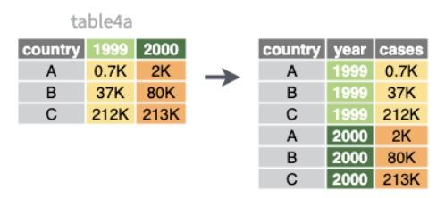
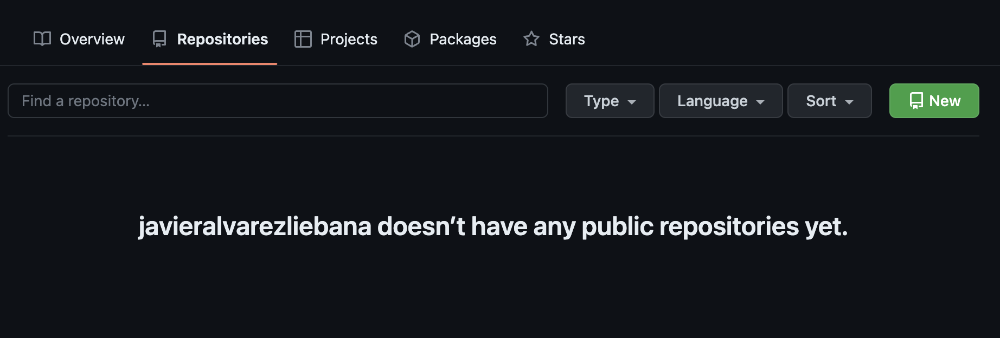
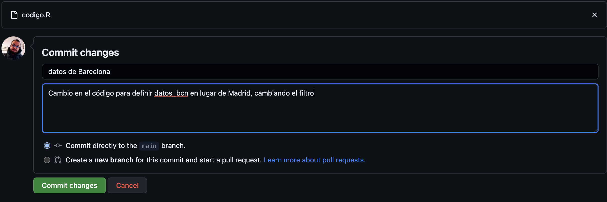
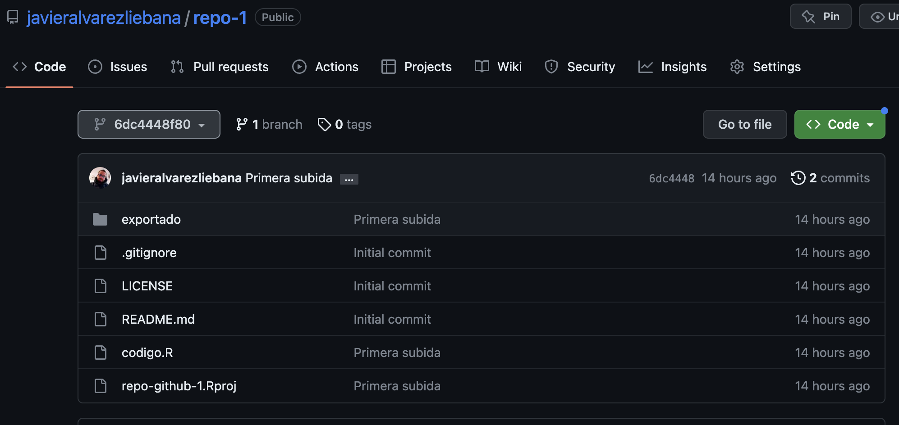
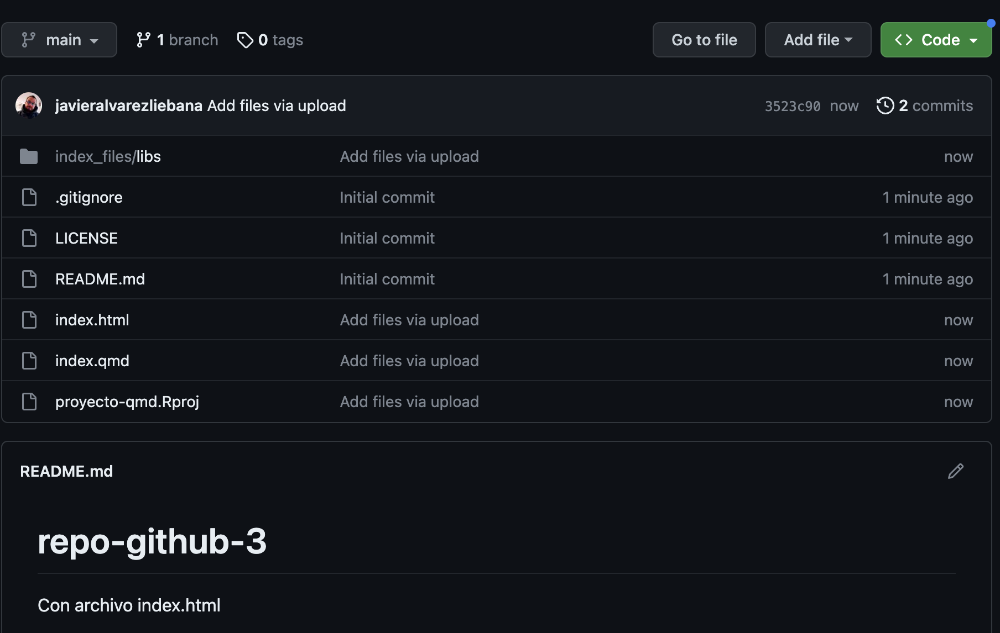
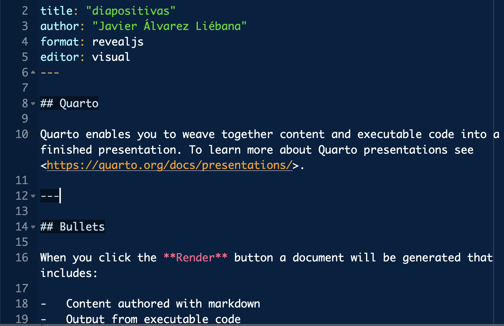
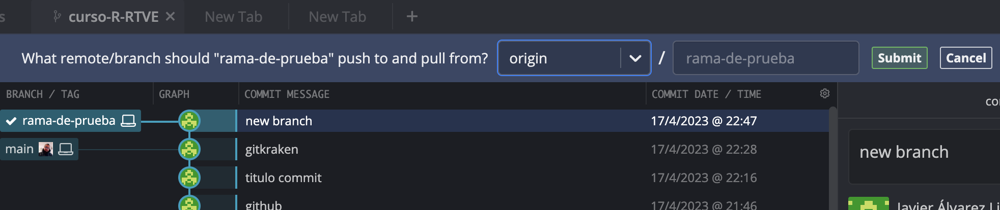

En el menú de las diapositivas (abajo a la izquierda) tienes una opción para descargarlas en pdf en Tools (consejo: no lo hagas hasta el final del curso ya que irán modificándose)
De la misma manera que en el ordenador solemos trabajar de manera ordenada por carpetas, en RStudio podemos hacer lo mismo para trabajar de manera eficaz creando proyectos.
Un proyecto será una «carpeta» dentro de RStudio, de manera que nuestro directorio raíz automáticamente será la propia carpeta de proyecto (pudiendo pasar de un proyecto a otro con el menu superior derecho).
Podemos crear uno en una carpeta nueva o en una carpeta ya existente.
Intentos de bases de datos
Matrices y data.frames
Primera intento: matrices
Cuando analizamos datos solemos tener varias variables de cada individuo: necesitamos una «tabla» que las recopile. La opción más inmediata son las matrices: concatenación de variables del mismo tipo e igual longitud.
También podemos realizar operaciones por columnas/filas sin recurrir a bucles con la función apply(), y le indicaremos como argumentos
la matriz
el sentido de la operación (MARGIN = 1 por filas, MARGIN = 2 por columnas)
la función a aplicar
# Media (mean) por columnas (MARGIN = 2)apply(datos_matriz, MARGIN =2, FUN ="mean")
estaturas pesos
165.00 78.25
# (Cuasi)varianza (var) por columnas (MARGIN = 2)apply(datos_matriz, MARGIN =2, FUN ="var")
estaturas pesos
166.6667 208.9167
Segundo intento: data.frame
Para poder trabajar con variables de distinto tipo tenemos lo que se conoce como data.frame: concatenación de variables de igual longitud pero pueden ser de tipo distinto.
Dado que un data.frame es ya una «base de datos» las variables no son meros vectores matemáticos: tienen un significado y podemos (debemos) ponerles nombres
edad estado nombre f_nacimiento
1 25 TRUE javi 1989-09-10
2 26 NA sandra 1996-06-12
3 27 FALSE carlos 1980-11-27
Segundo intento: data.frame
Si queremos acceder a sus elementos, podemos como en las matrices (aunque no es recomendable): ahora tenemos dos índices (filas y columnas, dejando libre la que no usemos)
tabla[2, ] # segunda fila (todas sus variables)
edad estado nombre f_nacimiento
2 26 NA sandra 1996-06-12
tabla[, 3] # tercera columna (de todos los individuos)
[1] "javi" "sandra" "carlos"
tabla[2, 1] # primera característica de la segunda persona
[1] 26
También tiene ventajas de una «base» de datos : podemos aceder a las variables por su nombre (recomendable ya que las variables pueden cambiar de posición), poniendo el nombre de la tabla seguido del símbolo $ (con el tabulador, nos aparecerá un menú de columnas a elegir)
Intento final: tibble
Las tablas en formato data.frame tienen algunas limitaciones
La principal es que no permite la definición “al vuelo”: imagina que definimos una base de datos con estaturas y pesos, y queremos una tercera variable con el IMC
Las tablas en formato tibble nos permitirá una gestión más ágil, eficiente y coherente de los datos, con 4 ventajas principales:
Metainformación: si te fijas en la cabecera, nos dice ya automáticamente el número de filas y columnas, y el tipo de cada variable
Recursividad: permite definir las variables secuencialmente (como hemos visto)
Intento final: tibble
Consistencia: si accedes a una columna que no existe avisa con un warning
tabla$invent
Warning: Unknown or uninitialised column: `invent`.
NULL
Por filas: crear por filas (copiar y pegar de una tabla) con tribble()
tribble(~colA, ~colB,"a", 1,"b", 2)
# A tibble: 2 × 2
colA colB
<chr> <dbl>
1 a 1
2 b 2
Consejo
El paquete {datapasta} nos permite copiar y pegar tablas de páginas web y documentos sencillos
Base de tidyverse: tidydata
Nuestra base de datos: tibble. Tidydata: un multiverso de datos limpios
R base vs Tidyverse
Si conoces algún otro lenguaje de programación (o tienes gente cercana que programa) te extrañará que no vayamos a usar conceptos habituales como
Bucles for: repetir un código un número fijo de iteraciones.
Bucles while: repetir un código hasta que se cumpla una condición
Estructuras if-else: estructuras de control para decidir por donde camina el código en función del valor de las variables.
Y es que con tidyverse, en la mayoría de ocasiones vamos a poder evitarlas (en especial los bucles)
¿Qué es tidyverse?
{tidyverse} es un «universo» de paquetes para garanatizar un flujo de trabajo (de inicio a fin) eficiente, coherente y lexicográficamente sencillo de entender, basado en la idea de que nuestros datos están limpios y ordenados (tidy)
¿Qué es tidyverse?
{tibble}: optimizando data.frame
{tidyr}: limpieza de datos
{readr}: carga datos rectangulares (.csv)
{dplyr}: gramática para depurar
{stringr}: manejo de textos
{ggplot2}: visualización de datos
{tidymodels}: modelización/predicción
También tenemos los paquetes {purrr} para el manejo de listas, {forcast} para cualitativas, {lubridate} para fechas, {readxl} para importar archivos .xls y .xlsx, {rvest} para web scraping y {rmarkdown} para comunicar resultados.
¿Qué es tidyverse?
{tibble}: optimizando data.frame
{tidyr}: limpieza de datos
{readr}: carga datos rectangulares (.csv)
{dplyr}: gramática para depurar
{stringr}: manejo de textos
{ggplot2}: visualización de datos
{tidymodels}: modelización/predicción
También tenemos los paquetes {purrr} para el manejo de listas, {forcast} para cualitativas, {lubridate} para fechas, {readxl} para importar archivos .xls y .xlsx, {rvest} para web scraping y {rmarkdown} para comunicar resultados.
Filosofía base: tidy data
Tidy datasets are all alike, but every messy dataset is messy in its own way (Hadley Wickham, Chief Scientist en RStudio)
TIDYVERSE
El universo de paquetes {tidyverse} se basa en la idea introducido por Hadley Wickham (el Dios al que rezo) de estandarizar el formato los datos para
sistematizar la depuración
hacer más sencillo su manipulación.
código legible
Reglas del tidy data
Lo primero por tanto será entender qué son los conjuntos tidydata ya que todo {tidyverse} se basa en que los datos están estandarizados.
Cada variable en una única columna
Cada individuo en una fila diferente
Cada celda con un único valor
Cada dataset en un tibble
Si queremos cruzar múltiples tablas debemos tener una columna común
Tubería (pipe)
En {tidyverse} será clave el operador pipe (tubería) definido como |> (ctrl+shift+M): será una tubería que recorre los datos y los transforma.
En R base, si queremos aplicar tres funciones first(), second() y third() en orden, sería
third(second(first(datos)))
En {tidyverse} podremos leer de izquierda a derecha y separar los datos de las acciones
datos |>first() |>second() |>third()
Apunte importante
Desde la versión 4.1.0 de R disponemos de |>, un pipe nativo disponible fuera de tidyverse, sustituyendo al antiguo pipe%>% que dependía del paquete {magrittr} (bastante problemático).
Tubería (pipe)
La principal ventaja es que el código sea muy legible (casi literal) pudiendo hacer grandes operaciones con los datos con apenas código.
¿Pero qué aspecto tienen los datos no tidy? Vamos a cargar la tabla table4a del paquete {tidyr} (ya lo tenemos cargado del entorno tidyverse).
library(tidyr)table4a
# A tibble: 3 × 3
country `1999` `2000`
<chr> <dbl> <dbl>
1 Afghanistan 745 2666
2 Brazil 37737 80488
3 China 212258 213766
¿Qué puede estar fallando?
Pivotar: pivot_longer()
table4a
# A tibble: 3 × 3
country `1999` `2000`
<chr> <dbl> <dbl>
1 Afghanistan 745 2666
2 Brazil 37737 80488
3 China 212258 213766
❎ Cada fila representa dos observaciones (1999 y 2000) → las columnas 1999 y 2000 en realidad deberían ser en sí valores de una variable y no nombres de columnas.
Incluiremos una nueva columna que nos guarde el año y otra que guarde el valor de la variable de interés en cada uno de esos años. Y lo haremos con la función pivot_longer(): pivotaremos la tabla a formato long:
# A tibble: 6 × 3
country year cases
<chr> <chr> <dbl>
1 Afghanistan 1999 745
2 Afghanistan 2000 2666
3 Brazil 1999 37737
4 Brazil 2000 80488
5 China 1999 212258
6 China 2000 213766

cols: nombre de las variables a pivotar
names_to: nombre de la nueva variable a la quemandamos la cabecera de la tabla (los nombres).
values_to: nombre de la nueva variable a la que vamos a mandar los datos.
Datos SUCIOS: messy data
Veamos otro ejemplo con la tabla table2
table2
# A tibble: 12 × 4
country year type count
<chr> <dbl> <chr> <dbl>
1 Afghanistan 1999 cases 745
2 Afghanistan 1999 population 19987071
3 Afghanistan 2000 cases 2666
4 Afghanistan 2000 population 20595360
5 Brazil 1999 cases 37737
6 Brazil 1999 population 172006362
7 Brazil 2000 cases 80488
8 Brazil 2000 population 174504898
9 China 1999 cases 212258
10 China 1999 population 1272915272
11 China 2000 cases 213766
12 China 2000 population 1280428583
¿Qué puede estar fallando?
Pivotar: pivot_wider()
# A tibble: 12 × 4
country year type count
<chr> <dbl> <chr> <dbl>
1 Afghanistan 1999 cases 745
2 Afghanistan 1999 population 19987071
3 Afghanistan 2000 cases 2666
4 Afghanistan 2000 population 20595360
5 Brazil 1999 cases 37737
6 Brazil 1999 population 172006362
7 Brazil 2000 cases 80488
8 Brazil 2000 population 174504898
9 China 1999 cases 212258
10 China 1999 population 1272915272
11 China 2000 cases 213766
12 China 2000 population 1280428583
❎ Cada observación está dividido en dos filas → los registros con el mismo año deberían ser el mismo
Lo que haremos será lo opuesto: con pivot_wider()ensancharemos la tabla
# A tibble: 6 × 4
country year cases population
<chr> <dbl> <dbl> <dbl>
1 Afghanistan 1999 745 19987071
2 Afghanistan 2000 2666 20595360
3 Brazil 1999 37737 172006362
4 Brazil 2000 80488 174504898
5 China 1999 212258 1272915272
6 China 2000 213766 1280428583
Datos SUCIOS: messy data
Veamos otro ejemplo con la tabla table3
table3
# A tibble: 6 × 3
country year rate
<chr> <dbl> <chr>
1 Afghanistan 1999 745/19987071
2 Afghanistan 2000 2666/20595360
3 Brazil 1999 37737/172006362
4 Brazil 2000 80488/174504898
5 China 1999 212258/1272915272
6 China 2000 213766/1280428583
¿Qué puede estar fallando?
Separar: separate()
table3
# A tibble: 6 × 3
country year rate
<chr> <dbl> <chr>
1 Afghanistan 1999 745/19987071
2 Afghanistan 2000 2666/20595360
3 Brazil 1999 37737/172006362
4 Brazil 2000 80488/174504898
5 China 1999 212258/1272915272
6 China 2000 213766/1280428583
❎ Cada celda contiene varios valores
Lo que haremos será hacer uso de la función separate() para mandar separar cada valor a una columna diferente.
table3 |>separate(rate, into =c("cases", "pop"))
# A tibble: 6 × 4
country year cases pop
<chr> <dbl> <chr> <chr>
1 Afghanistan 1999 745 19987071
2 Afghanistan 2000 2666 20595360
3 Brazil 1999 37737 172006362
4 Brazil 2000 80488 174504898
5 China 1999 212258 1272915272
6 China 2000 213766 1280428583
Separar: separate()
table3 |>separate(rate, into =c("cases", "pop"))
# A tibble: 6 × 4
country year cases pop
<chr> <dbl> <chr> <chr>
1 Afghanistan 1999 745 19987071
2 Afghanistan 2000 2666 20595360
3 Brazil 1999 37737 172006362
4 Brazil 2000 80488 174504898
5 China 1999 212258 1272915272
6 China 2000 213766 1280428583
Fíjate que los datos, aunque los ha separado, los ha mantenido como texto cuando en realidad deberían ser variables numéricas. Para ello podemos añadir el argumento opcional convert = TRUE
table3 |>separate(rate, into =c("cases", "pop"), convert =TRUE)
# A tibble: 6 × 4
country year cases pop
<chr> <dbl> <int> <int>
1 Afghanistan 1999 745 19987071
2 Afghanistan 2000 2666 20595360
3 Brazil 1999 37737 172006362
4 Brazil 2000 80488 174504898
5 China 1999 212258 1272915272
6 China 2000 213766 1280428583
Datos SUCIOS: messy data
Veamos el último ejemplo con la tabla table5
table5
# A tibble: 6 × 4
country century year rate
<chr> <chr> <chr> <chr>
1 Afghanistan 19 99 745/19987071
2 Afghanistan 20 00 2666/20595360
3 Brazil 19 99 37737/172006362
4 Brazil 20 00 80488/174504898
5 China 19 99 212258/1272915272
6 China 20 00 213766/1280428583
¿Qué puede estar fallando?
Unir unite()
table5
# A tibble: 6 × 4
country century year rate
<chr> <chr> <chr> <chr>
1 Afghanistan 19 99 745/19987071
2 Afghanistan 20 00 2666/20595360
3 Brazil 19 99 37737/172006362
4 Brazil 20 00 80488/174504898
5 China 19 99 212258/1272915272
6 China 20 00 213766/1280428583
❎ Tenemos mismos valores divididos en dos columnas
Usaremos unite() para unir los valores de siglo y año en una misma columna
table5 |>unite(col = year_completo, century, year, sep ="")
# A tibble: 6 × 3
country year_completo rate
<chr> <chr> <chr>
1 Afghanistan 1999 745/19987071
2 Afghanistan 2000 2666/20595360
3 Brazil 1999 37737/172006362
4 Brazil 2000 80488/174504898
5 China 1999 212258/1272915272
6 China 2000 213766/1280428583
💻 Tu turno
Intenta realizar los siguientes ejercicios sin mirar las soluciones
📝 Echa un vistazo a la tabla table4b del paquete {tidyr}. ¿Es tidydata? En caso negativo, ¿qué falla? ¿Cómo convertirla a tidy data en caso de que no lo sea ya?
📝 Echa un vistazo a la tabla relig_income del paquete {tidyr}. ¿Es tidydata? En caso negativo, ¿qué falla? ¿Cómo convertirla a tidy data en caso de que no lo sea ya?
📝 Echa un vistazo a la tabla billboard del paquete {tidyr}. ¿Es tidydata? En caso negativo, ¿qué falla? ¿Cómo convertirla a tidy data en caso de que no lo sea ya?
Código
billboard |>pivot_longer(cols ="wk1":"wk76",names_to ="week",names_prefix ="wk",values_to ="position",values_drop_na =TRUE)
Operaciones con filas
Operaciones con filas en tidyverse
¿Qué es tidyverse?
{tibble}: optimizando data.frame
{tidyr}: limpieza de datos
{readr}: carga datos rectangulares (.csv)
{dplyr}: gramática para depurar
{stringr}: manejo de textos
{ggplot2}: visualización de datos
{tidymodels}: modelización/predicción
También tenemos los paquetes {purrr} para el manejo de listas, {forcast} para cualitativas, {lubridate} para fechas, {readxl} para importar archivos .xls y .xlsx, {rvest} para web scraping y {rmarkdown} para comunicar resultados.
Preprocesamiento: dplyr
Dentro de {tidyverse} usaremos el paquete {dplyr} para el preprocesamiento y depuración de datos de datos.
La idea es que el código sea legible, como si fuese una lista de instrucciones que al leerla nos diga de manera muy evidente lo que está haciendo.
Hipótesis: tidydata
Toda la depuración que vamos a realizar es sobre la hipótesis de que nuestros datos están en tidydata
Recuerda que en {tidyverse} será clave el operador pipe (tubería) definido como |> (ctrl+shift+M): será una tubería que recorre los datos y los transforma.
Vamos a practicar con el dataset starwars del paquete cargado {dplyr}
library(tidyverse)starwars
Filtrar filas: filter()
datos |>filtro(condicion)
starwars |>filter(condicion)
El más simple es cuando filtramos registros en base a alguna condición lógica: con filter() se seleccionarán solo individuos que cumplan ciertas condiciones (muestreo no aleatorio por condiciones)
==, !=: igual o distinto que (|> filter(variable == "a"))
>, <: mayor o menor que (|> filter(variable < 3))
>=, <=: mayor o igual o menor o igual que (|> filter(variable >= 5))
%in%: valores pertenencen a un listado de opciones (|> filter(variable %in% c("azul", "verde")))
between(variable, val1, val2): si los valores (continuos) caen dentro de un rango de valores (|> filter(between(variable, 160, 180)))
Filtrar filas: filter()
datos |>filtro(condicion)
starwars |>filter(condicion)
¿Cómo harías para… filtrar los personajes de ojos marrones?
¿Qué tipo de variable es? –> La variable eye_color es cualitativa así que está representada por textos
starwars |>filter(eye_color =="brown")
# A tibble: 21 × 14
name height mass hair_color skin_color eye_color birth_year sex gender
<chr> <int> <dbl> <chr> <chr> <chr> <dbl> <chr> <chr>
1 Leia Or… 150 49 brown light brown 19 fema… femin…
2 Biggs D… 183 84 black light brown 24 male mascu…
3 Han Solo 180 80 brown fair brown 29 male mascu…
4 Yoda 66 17 white green brown 896 male mascu…
5 Boba Fe… 183 78.2 black fair brown 31.5 male mascu…
6 Lando C… 177 79 black dark brown 31 male mascu…
7 Arvel C… NA NA brown fair brown NA male mascu…
8 Wicket … 88 20 brown brown brown 8 male mascu…
9 Quarsh … 183 NA black dark brown 62 <NA> <NA>
10 Shmi Sk… 163 NA black fair brown 72 fema… femin…
# ℹ 11 more rows
# ℹ 5 more variables: homeworld <chr>, species <chr>, films <list>,
# vehicles <list>, starships <list>
Filtrar filas: filter()
datos |>filtro(condicion)
starwars |>filter(condicion)
¿Cómo harías para… filtrar los personajes que no tienen ojos marrones?
starwars |>filter(eye_color !="brown")
# A tibble: 66 × 14
name height mass hair_color skin_color eye_color birth_year sex gender
<chr> <int> <dbl> <chr> <chr> <chr> <dbl> <chr> <chr>
1 Luke Sk… 172 77 blond fair blue 19 male mascu…
2 C-3PO 167 75 <NA> gold yellow 112 none mascu…
3 R2-D2 96 32 <NA> white, bl… red 33 none mascu…
4 Darth V… 202 136 none white yellow 41.9 male mascu…
5 Owen La… 178 120 brown, gr… light blue 52 male mascu…
6 Beru Wh… 165 75 brown light blue 47 fema… femin…
7 R5-D4 97 32 <NA> white, red red NA none mascu…
8 Obi-Wan… 182 77 auburn, w… fair blue-gray 57 male mascu…
9 Anakin … 188 84 blond fair blue 41.9 male mascu…
10 Wilhuff… 180 NA auburn, g… fair blue 64 male mascu…
# ℹ 56 more rows
# ℹ 5 more variables: homeworld <chr>, species <chr>, films <list>,
# vehicles <list>, starships <list>
Filtrar filas: filter()
datos |>filtro(condicion)
starwars |>filter(condicion)
¿Cómo harías para … filtrar los personajes que tengan los ojos marrones o azules?
# A tibble: 40 × 14
name height mass hair_color skin_color eye_color birth_year sex gender
<chr> <int> <dbl> <chr> <chr> <chr> <dbl> <chr> <chr>
1 Luke Sk… 172 77 blond fair blue 19 male mascu…
2 Leia Or… 150 49 brown light brown 19 fema… femin…
3 Owen La… 178 120 brown, gr… light blue 52 male mascu…
4 Beru Wh… 165 75 brown light blue 47 fema… femin…
5 Biggs D… 183 84 black light brown 24 male mascu…
6 Anakin … 188 84 blond fair blue 41.9 male mascu…
7 Wilhuff… 180 NA auburn, g… fair blue 64 male mascu…
8 Chewbac… 228 112 brown unknown blue 200 male mascu…
9 Han Solo 180 80 brown fair brown 29 male mascu…
10 Jek Ton… 180 110 brown fair blue NA male mascu…
# ℹ 30 more rows
# ℹ 5 more variables: homeworld <chr>, species <chr>, films <list>,
# vehicles <list>, starships <list>
Filtrar filas: filter()
datos |>filtro(condicion)
starwars |>filter(condicion)
Fíjate que %in% es equivalente a concatenar varios == con una conjunción o (|)
# A tibble: 40 × 14
name height mass hair_color skin_color eye_color birth_year sex gender
<chr> <int> <dbl> <chr> <chr> <chr> <dbl> <chr> <chr>
1 Luke Sk… 172 77 blond fair blue 19 male mascu…
2 Leia Or… 150 49 brown light brown 19 fema… femin…
3 Owen La… 178 120 brown, gr… light blue 52 male mascu…
4 Beru Wh… 165 75 brown light blue 47 fema… femin…
5 Biggs D… 183 84 black light brown 24 male mascu…
6 Anakin … 188 84 blond fair blue 41.9 male mascu…
7 Wilhuff… 180 NA auburn, g… fair blue 64 male mascu…
8 Chewbac… 228 112 brown unknown blue 200 male mascu…
9 Han Solo 180 80 brown fair brown 29 male mascu…
10 Jek Ton… 180 110 brown fair blue NA male mascu…
# ℹ 30 more rows
# ℹ 5 more variables: homeworld <chr>, species <chr>, films <list>,
# vehicles <list>, starships <list>
Filtrar filas: filter()
datos |>filtro(condicion)
starwars |>filter(condicion)
¿Cómo harías para … filtrar los personajes que midan entre 120 y 160 cm?
¿Qué tipo de variable es? –> La variable height es cuantitativa continua así que deberemos filtrar por rangos de valores (intervalos) –> usaremos between()
starwars |>filter(between(height, 120, 160))
# A tibble: 6 × 14
name height mass hair_color skin_color eye_color birth_year sex gender
<chr> <int> <dbl> <chr> <chr> <chr> <dbl> <chr> <chr>
1 Leia Org… 150 49 brown light brown 19 fema… femin…
2 Mon Moth… 150 NA auburn fair blue 48 fema… femin…
3 Nien Nunb 160 68 none grey black NA male mascu…
4 Watto 137 NA black blue, grey yellow NA male mascu…
5 Gasgano 122 NA none white, bl… black NA male mascu…
6 Cordé 157 NA brown light brown NA fema… femin…
# ℹ 5 more variables: homeworld <chr>, species <chr>, films <list>,
# vehicles <list>, starships <list>
Filtrar filas: filter()
datos |>filtro(condicion)
starwars |>filter(condicion)
¿Cómo harías… filtrar los personajes que tengan ojos y no sean humanos?
starwars |>filter(eye_color =="brown"& species !="Human")
# A tibble: 3 × 14
name height mass hair_color skin_color eye_color birth_year sex gender
<chr> <int> <dbl> <chr> <chr> <chr> <dbl> <chr> <chr>
1 Yoda 66 17 white green brown 896 male mascu…
2 Wicket S… 88 20 brown brown brown 8 male mascu…
3 Eeth Koth 171 NA black brown brown NA male mascu…
# ℹ 5 more variables: homeworld <chr>, species <chr>, films <list>,
# vehicles <list>, starships <list>
Eliminar ausentes: drop_na()
datos |>retirar_ausentes(var1, var2, ...)
starwars |>drop_na(var1, var2, ...)
Hay un filtro especial para una de las operaciones más habituales en depuración: retirar los ausentes. Para ello podemos usar dentro de un filtro is.na(), que nos devuelve TRUE/FALSE en función de si es ausente, o bien …
Usar drop_na(): si no indicamos variable, elimina registros con ausente en cualquier variable. Más adelante veremos como imputar esos ausentes
starwars |>drop_na(mass, height)
# A tibble: 7 × 4
name mass height hair_color
<chr> <dbl> <int> <chr>
1 Luke Skywalker 77 172 blond
2 C-3PO 75 167 <NA>
3 R2-D2 32 96 <NA>
4 Darth Vader 136 202 none
5 Leia Organa 49 150 brown
6 Owen Lars 120 178 brown, grey
7 Beru Whitesun lars 75 165 brown
starwars |>drop_na()
# A tibble: 7 × 4
name mass height hair_color
<chr> <dbl> <int> <chr>
1 Luke Skywalker 77 172 blond
2 Darth Vader 136 202 none
3 Leia Organa 49 150 brown
4 Owen Lars 120 178 brown, grey
5 Beru Whitesun lars 75 165 brown
6 Biggs Darklighter 84 183 black
7 Obi-Wan Kenobi 77 182 auburn, white
💻 Tu turno
Intenta realizar los siguientes ejercicios sin mirar las soluciones
📝 Selecciona del conjunto original de starwars los personajes no humanos, male en el sexo y que midan entre 120 y 170 cm, o los personajes con ojos marrones o rojos.
📝 Busca información en la ayuda de la función str_detect() del paquete {stringr} (cargado en {tidyverse}). Consejo: prueba antes las funciones que vayas a usar con algún vector de prueba para poder comprobar su funcionamiento. Tras saber lo que hace, filtra solo aquellos personajes con apellido Skywalker
Código
starwars |>filter(str_detect(name, "Skywalker"))
Rebanadas de datos: slice()
datos |>rebanadas(posiciones)
starwars |>slice(posiciones)
A veces nos puede interesar realizar un muestreo no aleatorio discreccional, o lo que es lo mismo, filtrar por posición: con slice(posiciones) podremos seleccionar filas concretas pasando como argumento un vector de índices
# fila 1starwars |>slice(1)
# A tibble: 1 × 4
name height mass hair_color
<chr> <int> <dbl> <chr>
1 Luke Skywalker 172 77 blond
# filas de la 7 a la 9starwars |>slice(7:9)
# A tibble: 3 × 4
name height mass hair_color
<chr> <int> <dbl> <chr>
1 Beru Whitesun lars 165 75 brown
2 R5-D4 97 32 <NA>
3 Biggs Darklighter 183 84 black
# A tibble: 4 × 8
name height mass hair_color skin_color eye_color birth_year sex
<chr> <int> <dbl> <chr> <chr> <chr> <dbl> <chr>
1 C-3PO 167 75 <NA> gold yellow 112 none
2 Beru Whitesun l… 165 75 brown light blue 47 fema…
3 Obi-Wan Kenobi 182 77 auburn, w… fair blue-gray 57 male
4 Qui-Gon Jinn 193 89 brown fair blue 92 male
Rebanadas de datos: slice()
datos |>rebanadas(posiciones)
starwars |>slice(posiciones)
Disponemos de opciones por defecto:
con slice_head(n = ...) y slice_tail(n = ...) podemos obtener la cabecera y cola de la tabla
starwars |>slice_head(n =2)
# A tibble: 2 × 4
name height mass hair_color
<chr> <int> <dbl> <chr>
1 Luke Skywalker 172 77 blond
2 C-3PO 167 75 <NA>
starwars |>slice_tail(n =2)
# A tibble: 2 × 4
name height mass hair_color
<chr> <int> <dbl> <chr>
1 Captain Phasma NA NA unknown
2 Padmé Amidala 165 45 brown
Rebanadas de datos: slice()
datos |>rebanadas(posiciones)
starwars |>slice(posiciones)
Disponemos de opciones por defecto:
con slice_max() y slice_min() obtenemos la filas con menor/mayor valor de una variable (si empate, todas salvo que with_ties = FALSE) que indicamos en order_by = ...
starwars |>slice_min(mass, n =2)
# A tibble: 2 × 4
name height mass hair_color
<chr> <int> <dbl> <chr>
1 Ratts Tyerell 79 15 none
2 Yoda 66 17 white
starwars |>slice_max(height, n =2)
# A tibble: 2 × 4
name height mass hair_color
<chr> <int> <dbl> <chr>
1 Yarael Poof 264 NA none
2 Tarfful 234 136 brown
Aleatorio: slice_sample()
datos |>rebanadas_aleatorias(posiciones)
starwars |>slice_sample(posiciones)
El conocido como muestreo aleatorio simple se basa en seleccionar individuos aleatoriamente, de forma que cada uno tenga ciertas probabilidades de ser seleccionado. Con slice_sample(n = ...) podemos extraer n registros aleatoriamente (a priori equiprobables).
starwars |>slice_sample(n =2)
# A tibble: 2 × 14
name height mass hair_color skin_color eye_color birth_year sex gender
<chr> <int> <dbl> <chr> <chr> <chr> <dbl> <chr> <chr>
1 Mace Win… 188 84 none dark brown 72 male mascu…
2 Cliegg L… 183 NA brown fair blue 82 male mascu…
# ℹ 5 more variables: homeworld <chr>, species <chr>, films <list>,
# vehicles <list>, starships <list>
Aleatorio: slice_sample()
datos |>rebanadas_aleatorias(posiciones)
starwars |>slice_sample(posiciones)
También podremos indicarle la proporción de datos a samplear (en lugar del número) y si queremos que sea con reemplazamiento (que se puedan repetir).
# 5% de registros aleatorios con reemplazamientostarwars |>slice_sample(prop =0.05, replace =TRUE)
# A tibble: 4 × 14
name height mass hair_color skin_color eye_color birth_year sex gender
<chr> <int> <dbl> <chr> <chr> <chr> <dbl> <chr> <chr>
1 R5-D4 97 32 <NA> white, red red NA none mascu…
2 Watto 137 NA black blue, grey yellow NA male mascu…
3 Jabba De… 175 1358 <NA> green-tan… orange 600 herm… mascu…
4 R5-D4 97 32 <NA> white, red red NA none mascu…
# ℹ 5 more variables: homeworld <chr>, species <chr>, films <list>,
# vehicles <list>, starships <list>
Aleatorio: slice_sample()
datos |>rebanadas_aleatorias(posiciones)
starwars |>slice_sample(posiciones)
Como decíamos, «aleatorio» no es igual que «equiprobable», así que podemos pasarle un vector de probabilidades. Por ejemplo, vamos a forzar que sea muy improbable sacar una fila que no sean las dos primeras
# A tibble: 2 × 14
name height mass hair_color skin_color eye_color birth_year sex gender
<chr> <int> <dbl> <chr> <chr> <chr> <dbl> <chr> <chr>
1 Luke Sky… 172 77 blond fair blue 19 male mascu…
2 C-3PO 167 75 <NA> gold yellow 112 none mascu…
# ℹ 5 more variables: homeworld <chr>, species <chr>, films <list>,
# vehicles <list>, starships <list>
Paréntesis: sample()
La función slice_sample() es simplemente una integración de {tidyverse} de la función básica de R conocida como sample() que nos permite muestrear elementos
Por ejemplo, vamos a muestrear 10 tiradas de un dado, indicándole
soporte de nuestra variable aleatorio (valores permitidos en x)
tamaño muestral (size)
reemplazamiento (si TRUE entonces pueden salir repetidas, como en el caso del dado)
sample(x =1:6, size =10, replace =TRUE)
[1] 1 2 3 6 4 2 2 5 6 2
💻 Tu turno
Intenta realizar los siguientes ejercicios sin mirar las soluciones
También podemos ordenar filas en función de alguna variable con arrange()
starwars |>arrange(mass)
# A tibble: 5 × 6
name height mass hair_color skin_color eye_color
<chr> <int> <dbl> <chr> <chr> <chr>
1 Ratts Tyerell 79 15 none grey, blue unknown
2 Yoda 66 17 white green brown
3 Wicket Systri Warrick 88 20 brown brown brown
4 R2-D2 96 32 <NA> white, blue red
5 R5-D4 97 32 <NA> white, red red
Por defecto de menor a mayor pero podemos invertir el orden con desc()
starwars |>arrange(desc(height))
# A tibble: 5 × 3
name height mass
<chr> <int> <dbl>
1 Yarael Poof 264 NA
2 Tarfful 234 136
3 Lama Su 229 88
4 Chewbacca 228 112
5 Roos Tarpals 224 82
📝 Para saber que valores únicos hay en el color de pelo, elimina duplicados de la variable hair_color, eliminando antes los ausentes de dicha variable.
📝 De los personajes que son humanos y miden más de 160 cm, elimina duplicados en color de ojos, elimina ausentes en peso, selecciona los 3 más altos, y orden de mayor a menor peso. Devuelve la tabla.
La clave de {tidyverse} es la legibilidad: es importantísimo que el código se entienda, por nuestro yo el futuro pero también por la transparencia algorítmica hacia los demás
Por ejemplo: quitaremos ausentes de la variable peso, filtraremos los personajes humanos y altura superior a 140cm, sin duplicados en el color de pelo, extrayendo los 5 más altos y obteniendo 2 personajes aleatorios finalmente.
starwars |>elimino_ausentes(peso) |>filtro(especie humana Y altura >140 cm) |>sin_duplicados(color de pelo) |>rebanadas_max(peso, n =5) |>rebanadas_aleatorias(n =2)
La clave de {tidyverse} es la legibilidad: es importantísimo que el código se entienda, por nuestro yo el futuro pero también por la transparencia algorítmica hacia los demás
Por ejemplo: quitaremos ausentes de la variable peso, filtraremos los personajes humanos y altura superior a 140cm, sin duplicados en el color de pelo, extrayendo los 5 más altos y obteniendo 2 personajes aleatorios finalmente.
starwars |>elimino_ausentes(peso) |>filtro(especie humana Y altura >140 cm) |>sin_duplicados(color de pelo) |>rebanadas_max(peso, n =5) |>rebanadas_aleatorias(n =2)
La clave de {tidyverse} es la legibilidad: es importantísimo que el código se entienda, por nuestro yo el futuro pero también por la transparencia algorítmica hacia los demás
Por ejemplo: quitaremos ausentes de la variable peso, filtraremos los personajes humanos y altura superior a 140cm, sin duplicados en el color de pelo, extrayendo los 5 más altos y obteniendo 2 personajes aleatorios finalmente.
starwars |>elimino_ausentes(peso) |>filtro(especie humana Y altura >140 cm) |>sin_duplicados(color de pelo) |>rebanadas_max(peso, n =5) |>rebanadas_aleatorias(n =2)
La clave de {tidyverse} es la legibilidad: es importantísimo que el código se entienda, por nuestro yo el futuro pero también por la transparencia algorítmica hacia los demás
Por ejemplo: quitaremos ausentes de la variable peso, filtraremos los personajes humanos y altura superior a 140cm, sin duplicados en el color de pelo, extrayendo los 5 más altos y obteniendo 2 personajes aleatorios finalmente.
starwars |>elimino_ausentes(peso) |>filtro(especie humana Y altura >140 cm) |>sin_duplicados(color de pelo) |>rebanadas_max(peso, n =5) |>rebanadas_aleatorias(n =2)
La clave de {tidyverse} es la legibilidad: es importantísimo que el código se entienda, por nuestro yo el futuro pero también por la transparencia algorítmica hacia los demás
Por ejemplo: quitaremos ausentes de la variable peso, filtraremos los personajes humanos y altura superior a 140cm, sin duplicados en el color de pelo, extrayendo los 5 más altos y obteniendo 2 personajes aleatorios finalmente.
starwars |>elimino_ausentes(peso) |>filtro(especie humana Y altura >140 cm) |>sin_duplicados(color de pelo) |>rebanadas_max(peso, n =5) |>rebanadas_aleatorias(n =2)
La opción más sencilla para seleccionar variables por nombre es select(), dando como argumentos los nombres de columnas sin comillas.
starwars |>select(name, hair_color)
# A tibble: 87 × 2
name hair_color
<chr> <chr>
1 Luke Skywalker blond
2 C-3PO <NA>
3 R2-D2 <NA>
4 Darth Vader none
5 Leia Organa brown
6 Owen Lars brown, grey
7 Beru Whitesun lars brown
8 R5-D4 <NA>
9 Biggs Darklighter black
10 Obi-Wan Kenobi auburn, white
# ℹ 77 more rows
Selección columnas: select()
datos |>selecciono(var1, var2, ...)
starwars |>select(var1, var2, ...)
La función select() nos permite seleccionar varias variables a la vez, incluso concatenando sus nombres como si fuesen índices numéricos
starwars |>select(name:eye_color)
# A tibble: 4 × 6
name height mass hair_color skin_color eye_color
<chr> <int> <dbl> <chr> <chr> <chr>
1 Luke Skywalker 172 77 blond fair blue
2 C-3PO 167 75 <NA> gold yellow
3 R2-D2 96 32 <NA> white, blue red
4 Darth Vader 202 136 none white yellow
Y podemos deseleccionar columnas con - delante
starwars |>select(-mass, -(eye_color:starships))
# A tibble: 4 × 4
name height hair_color skin_color
<chr> <int> <chr> <chr>
1 Luke Skywalker 172 blond fair
2 C-3PO 167 <NA> gold
3 R2-D2 96 <NA> white, blue
4 Darth Vader 202 none white
Selección columnas: select()
datos |>selecciono(var1, var2, ...)
starwars |>select(var1, var2, ...)
Tenemos además palabras reservadas: everything()todas las variables…
starwars |>select(mass, homeworld, everything())
# A tibble: 4 × 14
mass homeworld name height hair_color skin_color eye_color birth_year sex
<dbl> <chr> <chr> <int> <chr> <chr> <chr> <dbl> <chr>
1 77 Tatooine Luke … 172 blond fair blue 19 male
2 75 Tatooine C-3PO 167 <NA> gold yellow 112 none
3 32 Naboo R2-D2 96 <NA> white, bl… red 33 none
4 136 Tatooine Darth… 202 none white yellow 41.9 male
# ℹ 5 more variables: gender <chr>, species <chr>, films <list>,
# vehicles <list>, starships <list>
…y last_col() para referirnos a la última columna.
# A tibble: 4 × 5
name height mass homeworld starships
<chr> <int> <dbl> <chr> <list>
1 Luke Skywalker 172 77 Tatooine <chr [2]>
2 C-3PO 167 75 Tatooine <chr [0]>
3 R2-D2 96 32 Naboo <chr [0]>
4 Darth Vader 202 136 Tatooine <chr [1]>
Selección columnas: select()
datos |>selecciono(var1, var2, ...)
starwars |>select(var1, var2, ...)
También podemos jugar con patrones en el nombre, aquellas que comiencen por un prefijo (starts_with()), terminen con un sufijo (ends_with()), contengan un texto (contains()) o cumplan una expresión regular (matches()).
# variables cuyo nombre acaba en "color" y contengan sexo o génerostarwars |>select(ends_with("color"), matches("sex|gender"))
# A tibble: 87 × 5
hair_color skin_color eye_color sex gender
<chr> <chr> <chr> <chr> <chr>
1 blond fair blue male masculine
2 <NA> gold yellow none masculine
3 <NA> white, blue red none masculine
4 none white yellow male masculine
5 brown light brown female feminine
6 brown, grey light blue male masculine
7 brown light blue female feminine
8 <NA> white, red red none masculine
9 black light brown male masculine
10 auburn, white fair blue-gray male masculine
# ℹ 77 more rows
Selección columnas: select()
datos |>selecciono(var1, var2, ...)
starwars |>select(var1, var2, ...)
Incluso podemos seleccionar por rango numérico si tenemos variables con un prefijo y números.
Con num_range() podemos seleccionar con un prefijo y una secuencia numérica.
datos |>select(num_range("semana", 1:4))
# A tibble: 3 × 4
semana1 semana2 semana3 semana4
<dbl> <dbl> <dbl> <dbl>
1 115 7 95 11
2 141 NA 162 19
3 232 17 NA 15
Selección columnas: select()
datos |>selecciono(var1, var2, ...)
starwars |>select(var1, var2, ...)
Por último, podemos seleccionar columnas por tipo de dato haciendo uso de where() y dentro una función que devuelva un valor lógico de tipo de dato.
# Solo columnas numéricas o de textostarwars |>select(where(is.numeric) |where(is.character))
# A tibble: 87 × 11
height mass birth_year name hair_color skin_color eye_color sex gender
<int> <dbl> <dbl> <chr> <chr> <chr> <chr> <chr> <chr>
1 172 77 19 Luke Sk… blond fair blue male mascu…
2 167 75 112 C-3PO <NA> gold yellow none mascu…
3 96 32 33 R2-D2 <NA> white, bl… red none mascu…
4 202 136 41.9 Darth V… none white yellow male mascu…
5 150 49 19 Leia Or… brown light brown fema… femin…
6 178 120 52 Owen La… brown, gr… light blue male mascu…
7 165 75 47 Beru Wh… brown light blue fema… femin…
8 97 32 NA R5-D4 <NA> white, red red none mascu…
9 183 84 24 Biggs D… black light brown male mascu…
10 182 77 57 Obi-Wan… auburn, w… fair blue-gray male mascu…
# ℹ 77 more rows
# ℹ 2 more variables: homeworld <chr>, species <chr>
Mover columnas: relocate()
datos |>recolocar(var1, despues_de = var2)
starwars |>relocate(var1, .after = var2)
Para facilitar la recolocación de variables tenemos una función para ello, relocate(), indicándole en .after o .beforedetrás o delante de qué columnas queremos moverlas.
starwars |>relocate(species, .before = name)
# A tibble: 87 × 14
species name height mass hair_color skin_color eye_color birth_year sex
<chr> <chr> <int> <dbl> <chr> <chr> <chr> <dbl> <chr>
1 Human Luke S… 172 77 blond fair blue 19 male
2 Droid C-3PO 167 75 <NA> gold yellow 112 none
3 Droid R2-D2 96 32 <NA> white, bl… red 33 none
4 Human Darth … 202 136 none white yellow 41.9 male
5 Human Leia O… 150 49 brown light brown 19 fema…
6 Human Owen L… 178 120 brown, gr… light blue 52 male
7 Human Beru W… 165 75 brown light blue 47 fema…
8 Droid R5-D4 97 32 <NA> white, red red NA none
9 Human Biggs … 183 84 black light brown 24 male
10 Human Obi-Wa… 182 77 auburn, w… fair blue-gray 57 male
# ℹ 77 more rows
# ℹ 5 more variables: gender <chr>, homeworld <chr>, films <list>,
# vehicles <list>, starships <list>
Renombrar: rename()
datos |>renombrar(nuevo = antiguo)
starwars |>rename(nuevo = antiguo)
A veces también podemos querer modificar la «metainformación» de los datos, renombrando columnas. Para ello usaremos de rename() poniendo primero el nombre nuevo y luego el antiguo.
📝 Filtra el conjunto de personajes y quédate solo con aquellos que en la variable height no tengan un dato ausente. Con los datos obtenidos del filtro anterior, selecciona solo las variables name, height, así como todas aquellas variables que CONTENGAN la palabra color en su nombre.
📝 Con los datos obtenidos del ejercicio anterior, traduce el nombre de las columnas a castellano
📝 Con los datos obtenidos del ejercicio anterior, coloca la variable de color de pelo justo detrás de la variable de nombres.
📝 Con los datos obtenidos del ejercicio anterior, comprueba cuántas modalidades únicas hay en la variable de color de pelo (sin usar unique()).
📝 Del conjunto de datos originales, elimina las columnas de tipo lista, y tras ello elimina duplicados en la variable eye_color. Tras eliminar duplicados extrae dicha columna en un vector.
Modificar columnas: mutate()
datos |>modificar(nueva =funcion())
starwars |>mutate(nueva =funcion())
En muchas ocasiones querremos modificar o crear variables con mutate().
Vamos a crear por ejemplo una nueva variable height_m con la altura en metros.
starwars |>mutate(height_m = height /100)
# A tibble: 87 × 15
name height mass hair_color skin_color eye_color birth_year sex gender
<chr> <int> <dbl> <chr> <chr> <chr> <dbl> <chr> <chr>
1 Luke Sk… 172 77 blond fair blue 19 male mascu…
2 C-3PO 167 75 <NA> gold yellow 112 none mascu…
3 R2-D2 96 32 <NA> white, bl… red 33 none mascu…
4 Darth V… 202 136 none white yellow 41.9 male mascu…
5 Leia Or… 150 49 brown light brown 19 fema… femin…
6 Owen La… 178 120 brown, gr… light blue 52 male mascu…
7 Beru Wh… 165 75 brown light blue 47 fema… femin…
8 R5-D4 97 32 <NA> white, red red NA none mascu…
9 Biggs D… 183 84 black light brown 24 male mascu…
10 Obi-Wan… 182 77 auburn, w… fair blue-gray 57 male mascu…
# ℹ 77 more rows
# ℹ 6 more variables: homeworld <chr>, species <chr>, films <list>,
# vehicles <list>, starships <list>, height_m <dbl>
Modificar columnas: mutate()
datos |>modificar(nueva =funcion())
starwars |>mutate(nueva =funcion())
Además con los argumentos opcionales podemos recolocar la columna modificada
# A tibble: 87 × 16
height_m IMC name height mass hair_color skin_color eye_color birth_year
<dbl> <dbl> <chr> <int> <dbl> <chr> <chr> <chr> <dbl>
1 1.72 26.0 Luke … 172 77 blond fair blue 19
2 1.67 26.9 C-3PO 167 75 <NA> gold yellow 112
3 0.96 34.7 R2-D2 96 32 <NA> white, bl… red 33
4 2.02 33.3 Darth… 202 136 none white yellow 41.9
5 1.5 21.8 Leia … 150 49 brown light brown 19
6 1.78 37.9 Owen … 178 120 brown, gr… light blue 52
7 1.65 27.5 Beru … 165 75 brown light blue 47
8 0.97 34.0 R5-D4 97 32 <NA> white, red red NA
9 1.83 25.1 Biggs… 183 84 black light brown 24
10 1.82 23.2 Obi-W… 182 77 auburn, w… fair blue-gray 57
# ℹ 77 more rows
# ℹ 7 more variables: sex <chr>, gender <chr>, homeworld <chr>, species <chr>,
# films <list>, vehicles <list>, starships <list>
Modificar columnas: mutate()
datos |>modificar(nueva =funcion())
starwars |>mutate(nueva =funcion())
Importante…
Cuando aplicamos mutate(), debemos de acordarnos que las operaciones se realizan de manera vectorial, elemento a elemento, por lo que la función que usemos dentro debe devolver un vector de igual longitud. En caso contrario, devolverá una constante
# A tibble: 87 × 15
constante name height mass hair_color skin_color eye_color birth_year sex
<dbl> <chr> <int> <dbl> <chr> <chr> <chr> <dbl> <chr>
1 97.3 Luke… 172 77 blond fair blue 19 male
2 97.3 C-3PO 167 75 <NA> gold yellow 112 none
3 97.3 R2-D2 96 32 <NA> white, bl… red 33 none
4 97.3 Dart… 202 136 none white yellow 41.9 male
5 97.3 Leia… 150 49 brown light brown 19 fema…
6 97.3 Owen… 178 120 brown, gr… light blue 52 male
7 97.3 Beru… 165 75 brown light blue 47 fema…
8 97.3 R5-D4 97 32 <NA> white, red red NA none
9 97.3 Bigg… 183 84 black light brown 24 male
10 97.3 Obi-… 182 77 auburn, w… fair blue-gray 57 male
# ℹ 77 more rows
# ℹ 6 more variables: gender <chr>, homeworld <chr>, species <chr>,
# films <list>, vehicles <list>, starships <list>
Recategorizar: if_else()
También podemos combinar mutate() con la expresión de control if_else() para recategorizar la variable: si se cumple una condición, hace una cosa, en caso contrario otra.
# A tibble: 87 × 4
name human height mass
<chr> <chr> <int> <dbl>
1 Luke Skywalker Human 172 77
2 C-3PO Not Human 167 75
3 R2-D2 Not Human 96 32
4 Darth Vader Human 202 136
5 Leia Organa Human 150 49
6 Owen Lars Human 178 120
7 Beru Whitesun lars Human 165 75
8 R5-D4 Not Human 97 32
9 Biggs Darklighter Human 183 84
10 Obi-Wan Kenobi Human 182 77
# ℹ 77 more rows
Recategorizar: case_when()
Para recategorizaciones más complejas tenemos case_when(), por ejemplo, para crear una categoría de los personajes en función de su altura.
📝 Selecciona solo las variables nombre, altura y así como todas aquellas variables relacionadas con el color, a la vez que te quedas solo con aquellos que no tengan ausente en la altura.
📝 Con los datos originales, comprueba cuántas modalidades únicas hay en la variable de color de pelo.
Código
starwars |>distinct(hair_color) |>nrow()
📝 Del dataset original, selecciona solo las variables numéricas y de tipo texto. Tras ello define una nueva variable llamada under_18 que nos recategorice la variable de edad: TRUE si es menor de edad y FALSE en caso contrario
📝 Del dataset original, crea una nueva columna llamada auburn (cobrizo/caoba) que nos diga TRUE si el color de pelo contiene dicha palabra y FALSE en caso contrario (reminder str_detect()).
📝 Del dataset original, incluye una columna que calcule el IMC. Tras ello, crea una nueva variable que valga NA si no es humano, delgadez por debajo de 18, normal entre 18 y 30, sobrepeso por encima de 30.
Haciendo uso de todo lo aprendido, vamos a proceder a crear una tabla con datos de bebés de tamaño n = 20 en donde simulemos el sexo de los bebés y su peso
Crea un tibble con dos columnas, una llamada id_bebe y otra llamada sexo. En el primer caso debe ir de 1 a 20. En el segundo caso, simula su sexo de manera que haya un 0.5 de probabilidad de chico y 0.5 de chica.
Conocido el sexo, crea una tercera columna llamada peso en la que simules dicho valor. Supondremos que para los chicos el peso sigue una distribución \(N(\mu = 3.266kg, \sigma = 0.514)\) y que para las chicas sigue una distribución \(N(\mu = 3.155kg, \sigma = 0.495)\).
tb <-tibble("id_bebe"=1:20,"sexo"=sample(c("chico", "chica"), size =20, replace =TRUE))microbenchmark::microbenchmark(tb |>mutate(peso =rnorm(n =20, mean =if_else(sexo =="chico", 3.266, 3.155),sd =if_else(sexo =="chico", 0.514, 0.495))), for (i in1:20) { tb[i, 3] =ifelse(tb$sexo[i] =="chico", rnorm(n =1, mean =3.266, sd =0.514), rnorm(n =1, mean =3.155, sd =0.495)) }, times =1e3)
Unit: microseconds
expr
mutate(tb, peso = rnorm(n = 20, mean = if_else(sexo == "chico", 3.266, 3.155), sd = if_else(sexo == "chico", 0.514, 0.495)))
for (i in 1:20) { tb[i, 3] = ifelse(tb$sexo[i] == "chico", rnorm(n = 1, mean = 3.266, sd = 0.514), rnorm(n = 1, mean = 3.155, sd = 0.495)) }
min lq mean median uq max neval cld
594.9 648.75 849.7468 701.70 816.15 59327.7 1000 a
2373.6 2522.30 2870.1816 2594.45 2867.25 8377.3 1000 b
Resúmenes
Summarise y group_by(). Contar y resumir: estadísticas desagregadas por factores/grupos.
Contar: count()
datos |>contar(var1, var2)
starwars |>count(var1, var2)
Hasta ahora solo hemos transformado o consultado los datos pero no hemos generado estadísticas. Empecemos por lo sencillo: ¿cómo contar (frecuencias)?
Cuando lo usamos en solitario count() nos devolverá simplemente el número de registros , pero cuando lo usamos con variables count() calcula lo que se conoce como frecuencias: número de elementos de cada modalidad.
starwars |>count(sex)
# A tibble: 5 × 2
sex n
<chr> <int>
1 female 16
2 hermaphroditic 1
3 male 60
4 none 6
5 <NA> 4
Contar: count()
datos |>contar(var1, var2)
starwars |>count(var1, var2)
Además si pasamos varias variables nos calcula lo que se conoce como una tabla de contigencia. Con sort = TRUE nos devolverá el conteo ordenado (más frecuentes primero).
starwars |>count(sex, gender, sort =TRUE)
# A tibble: 6 × 3
sex gender n
<chr> <chr> <int>
1 male masculine 60
2 female feminine 16
3 none masculine 5
4 <NA> <NA> 4
5 hermaphroditic masculine 1
6 none feminine 1
Agrupar: group_by()
datos |>agrupar(var1, var2) |>accion() |>desagrupar()
Cuando apliquemos group_by() es importante entender que NO MODIFICA los datos, sino que nos crea una variable de grupo (subtablas por cada grupo) que modificará las acciones futuras: las operaciones se aplicarán a cada subtabla por separado
Por ejemplo, imaginemos que queremos extraer el personaje más alto con slice_max().
starwars |>slice_max(height)
# A tibble: 1 × 14
name height mass hair_color skin_color eye_color birth_year sex gender
<chr> <int> <dbl> <chr> <chr> <chr> <dbl> <chr> <chr>
1 Yarael P… 264 NA none white yellow NA male mascu…
# ℹ 5 more variables: homeworld <chr>, species <chr>, films <list>,
# vehicles <list>, starships <list>
Agrupar: group_by()
datos |>agrupar(var1, var2) |>accion() |>desagrupar()
# A tibble: 6 × 14
name height mass hair_color skin_color eye_color birth_year sex gender
<chr> <int> <dbl> <chr> <chr> <chr> <dbl> <chr> <chr>
1 Taun We 213 NA none grey black NA fema… femin…
2 Jabba De… 175 1358 <NA> green-tan… orange 600 herm… mascu…
3 Yarael P… 264 NA none white yellow NA male mascu…
4 IG-88 200 140 none metal red 15 none mascu…
5 Ric Olié 183 NA brown fair blue NA <NA> <NA>
6 Quarsh P… 183 NA black dark brown 62 <NA> <NA>
# ℹ 5 more variables: homeworld <chr>, species <chr>, films <list>,
# vehicles <list>, starships <list>
Agrupar: group_by()
datos |>agrupar(var1, var2) |>accion() |>desagrupar()
Recuerda siempre hacer ungroup para eliminar la variable de grupo creada
En la nueva versión de {dplyr} ahora se permite incluir la variable de grupo en la llamada a muchas funciones con el argumento by = ... o .by = ...
starwars |>slice_max(height, by = sex)
# A tibble: 6 × 6
name height mass hair_color skin_color eye_color
<chr> <int> <dbl> <chr> <chr> <chr>
1 Yarael Poof 264 NA none white yellow
2 IG-88 200 140 none metal red
3 Taun We 213 NA none grey black
4 Jabba Desilijic Tiure 175 1358 <NA> green-tan, brown orange
5 Ric Olié 183 NA brown fair blue
6 Quarsh Panaka 183 NA black dark brown
Fila-a-fila: rowwise()
Una opción muy útil usada antes de una operación también es rowwise(): toda operación que venga después se aplicará en cada fila por separado. Por ejemplo, vamos a definir un conjunto dummy de notas.
Si aplicamos la media directamente el valor será idéntico ya que nos ha hecho la media global, pero nos gustaría sacar una media por registro. Para eso usaremos rowwise()
Fíjate que mutate() devuelve tantas filas como registros originales, mientras que con summarise() calcula un nuevo dataset de resumen, solo incluyendo aquello que esté indicado.
Resumir: summarise()
datos |>resumir()
starwars |>summarise()
Si además esto lo combinamos con la agrupación de group_by() o .by = ..., en pocas líneas de código puedes obtener estadísticas desagreagadas
Warning: Returning more (or less) than 1 row per `summarise()` group was deprecated in
dplyr 1.1.0.
ℹ Please use `reframe()` instead.
ℹ When switching from `summarise()` to `reframe()`, remember that `reframe()`
always returns an ungrouped data frame and adjust accordingly.
📝 Calcula cuántos personajes hay de cada especie, ordenados de más a menor frecuencia.
Código
starwars |>count(species, sort =TRUE)
📝 Tras eliminar ausentes en las variables de peso y estatura, añade una nueva variable que nos calcule el IMC de cada personaje, y determina el IMC medio de nuestros personajes desagregada por sexo
Vamos antes a hacer un repaso de lo aprendido en {tidyverse}
Carga la tabla billboard del paquete {tidyr}.
Código
billboard
Antes de nada, selecciona solo las primeras 52 semanas. Tras ello convierte el dataset a tidydata con los formatos y tipos adecuados para cada variable
Extrae la lista de artistas distintos que aparecen en la tabla, incluyendo cuántas veces aparece cada uno.
Determina cuántas canciones tiene cada artistal
🐣 Caso práctico
Determina las 5 canciones que más semanas aparecen en la lista de éxitos.
Determina para cada artista la canción que más semanas aparece en la lista de éxitos.
Determina el artista con más canciones en la lista
🐣 Caso práctico
Calcula la posición más alta en la que ha estado cada canción. Calcula la posición más alta en la que ha estado un artista
Realiza un muestreo aleatorio estratificado, extrayendo el 50% de los datos pero manteniendo la proporción de datos entre los distintos cuatrimestres.
Comunicar: Quarto
Comunicar resultados y material docente: rmd y Quarto
Comunicar: rmd y Quarto
Una de las principales fortalezas de R es la facilidad para generar informes, libros, webs, apuntes y hasta diapositivas (este mismo material por ejemplo). Para ello instalaremos antes
el paquete {rmarkdown} (para generar archivos .rmd)
Los archivos de extensión .qmd (o .rmd) nos permitirán fácilmente combinar:
Markdown: lenguaje tipado que nos permite crear contenido simple (tipo wordpress, con texto, negritas, cursivas, etc) con un diseño legible.
Matemáticas (latex): lenguaje para escribir notación matemática como \(x^2\) o \(\sqrt{y}\) o \(\int_{a}^{b} f(x) dx\)
Código y salidas: podremos no solo mostrar el paso final sino el código que has ido realizando (no solo en R), con cajitas de código llamadas chunks.
Imágenes, gráficas, tablas, estilos (css, js), etc.
Comunicar: rmd y Quarto
La principal ventaja de realizar este tipo de material en Quarto/Rmarkdown es que, al hacerlo desde RStudio, puedes generar un informe o una presentación sin salirte del entorno de programación en el que estás trabajando
De esta forma podrás analizar los datos, resumirlos y a la vez comunicarlos con la misma herramienta.
Recientemente el equipo de RStudio desarrolló Quarto, una versión mejorada de Rmarkdown (archivos .qmd), con un formato un poco más estético y simple. Tienes toda la documentación y ejemplos en https://quarto.org/
Nuestro primer informe
Vamos a crear el primer fichero rmarkdown con Quarto con extensión .qmd. Para ello solo necesitaremos hacer click en
File << New File << Quarto Document
Nuestro primer informe
Tras hacerlo nos aparecerán varias opciones de formatos de salida:
archivo .pdf
archivo .html (recomendable): documento dinámico, permite la interacción con el usuario, como una «página web».
archivo .doc (nada recomendable)
De momento dejaremos marcado el formato HTML que viene por defecto, y escribiremos el título de nuestro documento. Tras ello tendremos nuestro archivo .qmd (ya no es un script .R como los que hemos abierto hasta ahora).
Nuestro primer informe
Deberías tener algo similar a la captura de la imagen con dos modos de edición: Source (con código, la opción recomendada hasta que lo domines) y Visual (más parecido a un blog)
Para ejecutar TODO el documento debes clickar Render on Save y darle a guardar.
Cabecera de un qmd
Deberías haber obtenido una salida en html similar a esta (y se te ha generado en tu ordenador un archivo html)
Nuestro primer informe
Un fichero .qmd se divide básicamente en tres partes:
Cabecera: la parte que tienes al inicio entre ---.
Texto: que podremos formatear y mejorar con negritas (escrito como negritas, con doble astérisco al inicio y final), cursivas (cursivas, con barra baja al inicio y final) o destacar nombres de funciones o variables de R. Puedes añadir ecuaciones como \(x^2\) (he escrito $x^2$, entre dólares).
Código R
Cabecera de un qmd
La cabecera están en formato YAML y contiene los metadatos del documento:
title y subtitle: el título/subtítulo del documento
author: autor del mismo
date: fecha
format: formato de salida (podremos personalizar)
theme: si tienes algún archivo de estilos
toc: si quieres índice o no
toc-location: posición del índice
toc-title: título del índice
toc-depth: profundidad del índice
editor: si estás en modo visual o source.
Texto de un qmd
Respecto a la escritura solo hay una cosa importante: salvo que indiquemos lo contrario, TODO lo que vamos a escribir es texto (normal). No código R.
Vamos a empezar escribiendo una sección al inicio (# Intro y detrás por ej. la frase
Este material ha sido diseñado por el profesor Javier Álvarez Liébana, docente en la Universidad Complutense de Madrid
Además al Running Code le añadiremos una almohadilla #: las almohadillas FUERA DE CHUNKS nos servirán para crear epígrafes (secciones) en el documento
Índice de un qmd
Para que el índice capture dichas secciones modificaremos la cabecera del archivo como se observa en la imagen (puedes cambiar la localización del índice y el título si quieres para probar).
Texto en un qmd
Vamos a personalizar un poco el texto haciendo lo siguiente:
Vamos a añadir negrita al nombre (poniendo ** al inicio y al final).
Vamos añadir cursiva a la palabra material (poniendo _ al inicio y al final).
Vamos añadir un enlacehttps://www.ucm.es, asociándolo al nombre de la Universidad. Para ello el título lo ponemos entre corchetes y justo detrás el enlace entre paréntesis [«Universidad Complutense de Madrid»](https://www.ucm.es)
Código en un qmd
Para añadir código R debemos crear nuestras cajas de código llamadas chunks: altos en el camino en nuestro texto markdown donde podremos incluir código de casi cualquier lenguaje (y sus salidas).
Para incluir uno deberá de ir encabezado de la siguiente forma tienes un atajo Command + Option + I (Mac) o Ctrl + Shift + I (Windows)
Código en un qmd
Dentro de dicha cajita (que tiene ahora otro color en el documento) escribiremos código R como lo veníamos haciendo hasta ahora en los scripts.
Vamos por ejemplo a definir dos variables y su suma de la siguiente manera, escribiendo dicho código en nuestro .qmd (dentro de ese chunk)
# Código Rx <-1y <-2x + y
[1] 3
Etiquetando chunks
Los chunks pueden tener un nombre o etiqueta, de forma que podamos referenciarlos de nuevo para no repetir código.
Ejecutando chunks
En cada chunk aparecen dos botones:
botón de play: activa la ejecución y salida de ese chunk particular (lo puedes visualizar dentro de tu propio RStudio)
botón de rebobinar: activa la ejecución y salida de todos los chunk hasta ese (sin llegar a él)
Además podemos incluir código R dentro de la línea de texto (en lugar de mostrar el texto x ejecuta el código R mostrando la variable).
Personalización de chunks
Los chunks podemos personalizarlos con opciones al inicio del chunk precedido de #|:
#| echo: false: ejecuta código y se muestra resultado pero no visualiza código en la salida.
#| include: false: ejecuta código pero no muestra resultado y no visualiza código en la salida.
#| eval: false: no ejecuta código, no muestra resultado pero sí visualiza código en la salida.
#| message: false: ejecuta código pero no muestra mensajes de salida.
#| warning: false: ejecuta código pero no muestra mensajes de warning.
#| error: true: ejecuta código y permite que haya errores mostrando el mensaje de error en la salida.
Estas opciones podemos aplicarlas chunk a chunk o fijar los parámetros de forma global con knitr::opts_chunk$set() al inicio del documento (dentro de un chunk).
Organizando qmd
Además de texto y código podemos introducir lo siguiente:
Ecuaciones: puedes añadir además ecuaciones como \(x^2\) (he escrito $x^2$, la ecuación entre dólares).
Listas: puedes itemizar elementos poniendo *
* Paso 1: ...
* Paso 2: ...
Cross-references: puedes etiquetar partes del documento (la etiqueta se construye con {#nombre-seccion}) y llamarlas luego con [Sección](@nombre-seccion)
Gráficas/imágenes en qmd
Por último, también podemos añadir pies de gráficas o imágenes añadiendo #| fig-cap: "..."
Fíjate que el caption está en el margen (por ejemplo). Puedes cambiarlo introduciendo ajustes en la cabecera (todo lo relativo a figuras empieza por fig-, y puedes ver las opciones tabulando). Tienes más información en https://quarto.org/
Añadir estilos
Por último puedes añadir un tema personalizado incluyendo un archivo de estilos (archivo en formato .scss o .css). Tenéis disponible un archivo de estilos en https://github.com/dadosdelaplace/seminario-R-biods.
Importante
El archivo de estilos debe estar en la misma carpeta que el archivo .qmd
Generar diapositivas
El proceso es equivalente con tres cambios:
Quarto presentation: ahora en File > New File hay que hacer click en Quarto Presentation. La cabecera ahora será ahora parecido a esto (entre otras personalizaciones posibles)
title:"Tidyverse y Quarto"subtitle:"Seminario de tidyverse y Quarto para docencia e investigación"author:"Seminarios BioDS • curso 2023-2024"affiliation: Facultad de Estudios Estadísticos (UCM)lang: esformat: revealjs:
Generar diapositivas
El proceso es equivalente con tres cambios:
Separado de diapositivas: para indicarle el cambio de diapositiva basta con escribir . . . (tres puntos separados por espacios y un salto de línea)
Formato multicolumna: el formato diapositivas permite el modo multicolumna (importante los espacios y no espacios del código ya que no es R sino revealjs)
:::: columns::: {.column width="40%"} algo en la primera columna (más estrecha):::::: {.column width="60%"} algo en la segunda columna (más ancha):::::::
Importar y exportar
Importar/exportar datos en R
Importar/exportar datos
Hasta ahora solo hemos usado datos cargados ya en paquetes pero muchas veces necesitaremos importar datos de manera externa. Una de las principales fortalezas de R es que podemos importar datos de manera muy sencilla en distintos formatos:
Formatos nativos de R: formatos .rda, .RData y .rds
Datos rectangulares (tabulados): formatos .csv y .tsv
Datos sin tabular: formato .txt
Datos en excel: formatos .xls y .xlsx
Datos desde SAS/Stata/SPSS: formatos .sas7bdat, .sav y .dat
Datos desde API: Google Drive, aemet, catastro, twitter, spotify, etc
Datos rectangulares: readr
El paquete {readr} dentro del entorno {tidyverse} contiene distintas funciones útiles para la carga de datos rectangulares (sin formatear).
read_csv(): archivos .csv cuyo separador sea la coma
read_csv2(): punto y coma
read_tsv(): tabulador.
read_table(): espacio.
read_delim(): función genérica para archivos delimitados por caracteres.
Todos necesitan como argumento la ruta del archivo amén de otros opcionales (saltar o no cabecera, decimales, etc). Ver más en https://readr.tidyverse.org/
Datos tabulados (.csv, .tsv)
La principal ventaja de {readr} es que automatiza el formateo para pasar de un archivo plano (sin formato) a un tibble (en filas y columnas, con formato).
Archivo .csv: con read_csv() cargaremos archivos separados por coma, pasando como argumento la ruta en file = .... Vamos a importar el dataset chickens.csv (sobre pollos de dibujos animados, why not). Si te fijas en la salida nos proporciona el tipo de variables.
# A tibble: 5 × 4
chicken sex eggs_laid motto
<chr> <chr> <dbl> <chr>
1 Foghorn Leghorn rooster 0 That's a joke, ah say, that's a jok…
2 Chicken Little hen 3 The sky is falling!
3 Ginger hen 12 Listen. We'll either die free chick…
4 Camilla the Chicken hen 7 Bawk, buck, ba-gawk.
5 Ernie The Giant Chicken rooster 0 Put Captain Solo in the cargo hold.
Datos tabulados (.csv, .tsv)
El formato de las variables normalmente lo hará read_csv() de forma automática, y podemos consultarlo con spec()
Aunque lo haga normalmente bien de forma automática podemos especificar el formato explícitamente en col_types = list() (en formato lista, con col_xxx() para cada tipo de variable, por ejemplo una la pondremos como cualitativa o factor).
# A tibble: 5 × 4
chicken sex eggs_laid motto
<chr> <fct> <dbl> <chr>
1 Foghorn Leghorn rooster 0 That's a joke, ah say, that's a jok…
2 Chicken Little hen 3 The sky is falling!
3 Ginger hen 12 Listen. We'll either die free chick…
4 Camilla the Chicken hen 7 Bawk, buck, ba-gawk.
5 Ernie The Giant Chicken rooster 0 Put Captain Solo in the cargo hold.
Datos tabulados (.csv, .tsv)
Incluso podemos indicar que variables que queremos seleccionar (sin ocupar memoria), indicándoselo en col_select = ...
# A tibble: 5 × 3
chicken sex eggs_laid
<chr> <chr> <dbl>
1 Foghorn Leghorn rooster 0
2 Chicken Little hen 3
3 Ginger hen 12
4 Camilla the Chicken hen 7
5 Ernie The Giant Chicken rooster 0
Datos sin tabular (.txt)
Vamos a usar de nuevo read_csv() con el archivo massey-rating.txt.
# A tibble: 8 × 6
`Lots of people` ...2 ...3 ...4 ...5 ...6
<chr> <chr> <chr> <chr> <chr> <chr>
1 simply cannot resist writing <NA> <NA> <NA> <NA> some not…
2 at the top <NA> of their sp…
3 or merging <NA> <NA> <NA> cells
4 Name Profession Age Has kids Date of birth Date of …
5 David Bowie musician 69 TRUE 17175 42379
6 Carrie Fisher actor 60 TRUE 20749 42731
7 Chuck Berry musician 90 TRUE 9788 42812
8 Bill Paxton actor 61 TRUE 20226 42791
Datos en excel (.xls, .xlsx)
deaths
# A tibble: 8 × 6
`Lots of people` ...2 ...3 ...4 ...5 ...6
<chr> <chr> <chr> <chr> <chr> <chr>
1 simply cannot resist writing <NA> <NA> <NA> <NA> some not…
2 at the top <NA> of their sp…
3 or merging <NA> <NA> <NA> cells
4 Name Profession Age Has kids Date of birth Date of …
5 David Bowie musician 69 TRUE 17175 42379
6 Carrie Fisher actor 60 TRUE 20749 42731
7 Chuck Berry musician 90 TRUE 9788 42812
8 Bill Paxton actor 61 TRUE 20226 42791
Algo por desgracia muy habitual es que haya algún tipo de comentario o texto al inicio del archivo, teniendo que saltarnos dichas filas.
Datos en excel (.xls, .xlsx)
Podemos saltarnos dichas filas directamente en la carga con skip = ... (indicando el número de filas que nos saltamos)
De la misma manera que podemos importar también podemos exportar
exportado en .RData (opción recomendada para variables guardadas en R). Recuerda que esta extensión solo se podrá usar en R. Para ello nos basta con usar save(objeto, file = ruta)
tabla <-tibble("a"=1:4, "b"=1:4)save(tabla, file ="./datos/tabla_prueba.RData")rm(tabla) # eliminarload("./datos/tabla_prueba.RData")tabla
# A tibble: 4 × 2
a b
<int> <int>
1 1 1
2 2 2
3 3 3
4 4 4
Exportar
De la misma manera que podemos importar también podemos exportar
exportado en .RDS (opción recomendada para variables guardadas en R). Recuerda que esta extensión solo se podrá usar en R. Para ello nos basta con usar saveRDS(objeto, file = ruta)
saveRDS(tabla, file ="tabla.RDS")
Exportar
De la misma manera que podemos importar también podemos exportar
exportado en .csv. Para ello nos basta con usar write_csv(objeto, file = ruta)
Una de las principales ventajas de R es que podemos hacer uso de todas las funciones anteriores de importar pero directamente desde una web, sin necesidad de realizar la descarga manual: en lugar de pasarle la ruta local le indicaremos el enlace. Por ejemplo, vamos a descargar los datos de covid del ISCIII (https://cnecovid.isciii.es/covid19/#documentaci%C3%B3n-y-datos)
# A tibble: 700 × 8
provincia_iso sexo grupo_edad fecha num_casos num_hosp num_uci num_def
<chr> <chr> <chr> <date> <dbl> <dbl> <dbl> <dbl>
1 A H 0-9 2020-01-01 0 0 0 0
2 A H 10-19 2020-01-01 0 0 0 0
3 A H 20-29 2020-01-01 0 0 0 0
4 A H 30-39 2020-01-01 0 0 0 0
5 A H 40-49 2020-01-01 0 0 0 0
6 A H 50-59 2020-01-01 0 0 0 0
7 A H 60-69 2020-01-01 0 0 0 0
8 A H 70-79 2020-01-01 0 0 0 0
9 A H 80+ 2020-01-01 0 0 0 0
10 A H NC 2020-01-01 0 0 0 0
# ℹ 690 more rows
Desde google drive
Otra opción disponible (sobre todo si trabajamos con otras personas que trabajan) es importar desde una hoja de cálculo Google Drive, haciendo uso de read_sheet() del paquete {googlesheets4}
La primera vez te pedirá un permiso de tidyverse para interactuar con vuestro drive
Veamos un pequeño resumen de los datos que ya conocemos:
vectores: colección de elementos de igual tipo. Pueden ser números, caracteres o valores lógicos, entre otros.
matrices: colección BIDIMENSIONAL de elementos de igual tipo e igual longitud.
data.frame / tibble: colección BIDIMENSIONAL de elementos de igual longitud pero de cualquier tipo.
Las listas serán colecciones de variables de diferente tipo y diferente longitud, con estructuras totalmente heterógeneas (incluso una lista puede tener dentro a su vez otra lista).
Paquete purrr
Una opción más flexible y versatil que la familia lapply es hacer uso del paquete {purrr} ya cargado dentro del entorno {tidyverse}
library(purrr)
Este paquete está pensado para imitar la programa funcional de otros lenguajes orientados Big Data como Scala o Hadoop (de Google).
Paquete purrr
La función más simple de {purrr} es conocida como la función map(), encargada de aplicar una función a una lista de manera vectorial, elemento a elemento. . . .
Por ejemplo, con map() podemos “mapear” cada lista y aplicar la función raíz cuadrada a cada elemento de la lista.
Con R tenemos una vectorización automática cuando hablamos de vectores ya que trabaja elemento-a-elemento, pero por defecto, el output de map es una lista.
Paquete purrr
Otro ejemplo: definamos dos distribuciones normales, con diferente \(n\). ¿Cómo calcular la media de cada una de manera inmediata?
Las guardamos en una lista y aplicamos map()
x <-list(rnorm(n =1500, mean =0, sd =0.7),rnorm(n =2800, mean =2, sd =1.5))map(x, mean)
[[1]]
[1] -0.04136339
[[2]]
[1] 2.03415
Paquete purrr
Lo mismo si queremos usar cualquier otra función que queramos definir nosotros mismos (por ejemplo, la media de los cuadrados)
Código
map(x, function(x) { mean(x^2) })
[[1]]
[1] 0.4759231
[[2]]
[1] 6.409026
Paquete purrr
Además de ser más legible y eficiente, con {purrr} podemos decidir el formato de salida de manera sencilla
output como vector double con map_dbl()
output como vector de enteros con map_int()
output como vector de caracteres con map_chr()
output como vector lógico con map_lgl()
map_dbl(x, mean)
[1] -0.04136339 2.03414977
map_chr(x, function(x) { glue::glue("Mean is {round(mean(x), 5)}") })
[1] "Mean is -0.04136" "Mean is 2.03415"
Paquete purrr
c(x[[1]][3], x[[2]][3])
[1] -0.8233694 -0.9365637
Además si incluyes como argumento un número en lugar de una función, nos devolverá el i-ésimo elemento de la lista.
map_dbl(x, 3)
[1] -0.8233694 -0.9365637
Paquete purrr
También nos permite la opción de generalizarlo para funciones que necesiten dos argumentos de entrada (operaciones binarias) con map2()
x <-list("a"=1:3, "b"=4:6)y <-list("c"=c(-1, 4, 0), "b"=c(5, -4, -1))map2(x, y, function(x, y) { x^2+ y^2})
$a
[1] 2 20 9
$b
[1] 41 41 37
Paquete purrr
El output podemos también obtenerlo en formato tibble añadiendo un list_rbind() o list_cbind() para concatenar los valores d euna lista en formato tabular.
x <-c("a", "b", "c")y <-1:3map2(x, y, function(x, y) { tibble(x, y) }) |>list_rbind()
# A tibble: 3 × 2
x y
<chr> <int>
1 a 1
2 b 2
3 c 3
Paquete purrr
Lo anterior se puede generalizar con pmap_xxx() lo que nos permite aplicar funciones con múltiples argumentos.
x <-list(1, 1, 1)y <-list(10, 20, 30)z <-list(100, 200, 300)pmap_dbl(list(x, y, z), sum)
[1] 111 221 331
Paquete purrr
Dentro del paquete contamos con otro tipo de [iteradores que no devuelven nada] (solo side-effects) como es el caso de walk() (solo un argumento de entrada), walk2() (dos argumentos) and pwalk() (multiples argumentos), todos ellos con un return invisible
list("a"=1:3, "b"=4:6) |>map2(list("a"=11:13, "b"=14:16),function(x, y) { x + y }) |>walk(print)
[1] 12 14 16
[1] 18 20 22
Paquete purrr
Recientemente se ha desarrollado {loopurrr}, un paquete que permite la traducción con as_loop() de lenguaje funcional en {purrr} a bucles para poder entender mejor lo que hace (ver más en https://timteafan.github.io/loopurrr/)
Al trabajar con datos no siempre tendremos la información en una sola tabla y a veces nos interesará cruzar la información de distintas fuentes.
Para ello usaremos un clásico de todo lenguaje que maneja datos: los famosos join, una herramienta que nos va a permitir cruzar una o variables tablas, haciendo uso de una columna identificadora de cada una de ellas (por ejemplo, imagina que cruzamos datos de hacienda y de antecedentes penales, haciendo join por la columna DNI).
Relacionando datos
tabla_1 |>xxx_join(tabla_2, by = id)
inner_join(): solo sobreviven los registros con id en ambas tablas.
full_join(): mantiene todos los registros de ambas tablas.
left_join(): mantiene todos los registros de la primera tabla, y busca cuales tienen id también en la segunda (en caso de no tenerlo se rellena con NA los campos de la 2ª tabla).
right_join(): mantiene todos los registros de la segunda tabla, y busca cuales tienen id también en la primera.
Relacionando datos
Vamos a probar los distintos joins con un ejemplo sencillo
Imagina que queremos incorporar a tb_1 la información de la tabla_2, identificando los registros por la columna key (indicando con by = "key" la columna por la que tiene que cruzar): queremos mantener todos los registros de la primera tabla y buscar cuales tienen id (mismo valor en key) también en la segunda tabla.
Fíjate que los registros de la primera cuya key no ha encontrado en la segunda les ha dado el valor de ausente.
Right join
El right_join() realizará la operación contraria: vamos ahora a incorporar a tb_2 la información de la tabla_2, identificando los registros por la columna key (indicando con by = "key" la columna por la que tiene que cruzar): queremos mantener todos los registros de la segunda y buscar cuales tienen id (mismo valor en key) también en la primera tabla.
Además podemos cruzar por varias columnas a la vez (interpretará como igual registro aquel que tenga el conjunto de claves igual), con by = c("var1_t1" = "var1_t2", "var2_t1" = "var2_t2", ...). Modifiquemos el ejemplo anterior
Los dos anteriores casos forman lo que se conoce como outer joins: cruces donde se mantienen observaciones que salgan en al menos una tabla. El tercer outer join es el conocido como full_join() que nos mantendrá las observaciones de ambas tablas, añadiendo las filas que no casen con la otra tabla.
Frente a los outer join está lo que se conoce como inner join, con inner_join(): un cruce en el que solo se mantienen las observaciones que salgan en ambas tablas, solo mantiene aquellos registros matcheados.
Fíjate que en términos de registros, inner_join si es conmutativa, nos da igual el orden de las tablas: lo único que cambia es el orden de las columnas que añade.
Por último tenemos dos herramientas interesantes para filtrar (no cruzar) registros: semi_join() y anti_join(). El semi join nos deja en la primera tabla los registros que cuya clave está también en la segunda (como un inner join pero sin añadir la info de la segunda tabla). Y el segundo, los anti join, hace justo lo contrario (aquellos que no están).
# semijointb_1 |>semi_join(tb_2, by =c("key_1"="key_2"))
# A tibble: 2 × 2
key_1 val
<int> <chr>
1 1 x1
2 2 x2
# antijointb_1 |>anti_join(tb_2, by =c("key_1"="key_2"))
# A tibble: 1 × 2
key_1 val
<int> <chr>
1 3 x3
💻 Tu turno
Intenta realizar los siguientes ejercicios sin mirar las soluciones
Para los ejercicios usaremos las tablas disponibles en el paquete {nycflights13} (echa un vistazo antes)
library(nycflights13)
airlines: nombre de aerolíneas (con su abreviatura).
airports: datos de aeropuertos (nombres, longitud, latitud, altitud, etc).
flights: datos de vuelos.
planes: datos de los aviones.
weather: datos meteorológicos horarios de las estaciones LGA, JFK y EWR.
💻 Tu turno
Intenta realizar los siguientes ejercicios sin mirar las soluciones
📝 Del paquete {nycflights13} cruza la tabla flights con airlines. Queremos mantener todos los registros de vuelos, añadiendo la información de las aerolíneas a la tabla de aviones.
Código
flights_airlines <- flights |>left_join(airlines, by ="carrier")flights_airlines
📝 A la tabla obtenida del cruce del apartado anterior, cruza después con los datos de los aviones en planes, pero incluyendo solo aquellos vuelos de los que tengamos información de sus aviones (y viceversa).
Código
flights_airlines_planes <- flights_airlines |>inner_join(planes, by ="tailnum")flights_airlines_planes
📝 Repite el ejercicio anterior pero conservando ambas variables year (en una es el año del vuelo, en la otra es el año de construcción del avión), y distinguiéndolas entre sí
Código
flights_airlines_planes <- flights_airlines |>inner_join(planes, by ="tailnum",suffix =c("_flight", "_build_aircraft"))flights_airlines_planes
📝 Al cruce obtenido del ejercicio anterior incluye la longitud y latitud de los aeropuertos en airports, distinguiendo entre la latitud/longitud del aeropuerto en destino y en origen.
Código
flights_airlines_planes %>%left_join(airports %>%select(faa, lat, lon),by =c("origin"="faa")) |>rename(lat_origin = lat, lon_origin = lon) |>left_join(airports %>%select(faa, lat, lon),by =c("dest"="faa")) |>rename(lat_dest = lat, lon_dest = lon)
📝 Filtra de airports solo aquellos aeropuertos de los que salgan vuelos. Repite el proceso filtrado solo aquellos a los que lleguen vuelos
Código
airports |>semi_join(flights, by =c("faa"="origin"))airports |>semi_join(flights, by =c("faa"="dest"))
📝 ¿De cuántos vuelos no disponemos información del avión? Elimina antes los vuelos que no tengan identificar (diferente a NA) del avión
Código
flights |>drop_na(tailnum) |>anti_join(planes, by ="tailnum") |>count(tailnum, sort =TRUE) # de mayor a menor ya de paso
Factores
Trabajando con variables cualitativas
Factores
En el caso de las variables cualitativas, llamaremos niveles o modalidades a los diferentes valores que pueden tomar estos datos. Por ejemplo, en el caso de la variable sex del conjunto starwars, tenemos 4 niveles permitidos: female, hermaphroditic, male y none (amén de datos ausentes).
starwars |>count(sex)
# A tibble: 5 × 2
sex n
<chr> <int>
1 female 16
2 hermaphroditic 1
3 male 60
4 none 6
5 <NA> 4
Factores
Este tipo de variables se conocen en R como factores. Y el paquete fundamental para tratarlos es {forcats} (del entorno {tidyverse}).
Factores
Este paquete nos permite fijar los niveles (guardados internamente como levels) que toma una determinada variable categórica, dándoles un tratamiento diferente a las cadena de texto normales.
Veamos un ejempo sencillo definiendo una variable estado que tome los valores "sano", "leve" y "grave" de la siguiente manera.
La variable estado actualmente es de tipo texto, de tipo chr, algo que podemos comprobar con class(estado).
class(estado)
[1] "character"
Factores
Desde un punto de vista estadístico y computacional, para R esta variable ahora mismo sería equivalente una variable de nombres. Pero estadísticamente no es lo mismo una variable con nombres (que identifican muchas veces el registro) que una variable categórica como estado que solo puede tomar esos 3 niveles. ¿Cómo convertir a factor?
Haciendo uso de la función as_factor() del paquete {forcats}.
No solo ha cambiado la clase de la variable sino que ahora, debajo del valor guardado, nos aparece la frase Levels: grave leve sano: son las modalidades o niveles de nuestra cualitativa.
Imagina que ese día en el hospital no tuviésemos a nadie en estado grave: aunque ese día nuestra variable no tome dicho valor, el estado grave es un nivel permitido en la base de datos, así que aunque lo eliminemos, por ser un factor, el nivel permanece (no lo tenemos ahora pero es un nivel permitido).
Esta forma de trabajar con variables cualitativas nos permite dar una definición teórica de nuestra base de datos, pudiendo incluso contar valores que aún no existen (pero que podrían), haciendo uso de fct_count()
# A tibble: 3 × 2
f n
<ord> <int>
1 sano 6
2 grave 4
3 leve 3
Factores
A veces querremos agrupar niveles, por ejemplo, no permitiendo niveles que no sucedan un mínimo de veces con fct_lump_min(.., min = ..) (las observaciones que no lo cumplan irán a un nivel genérico llamado Other, aunque se puede cambiar con el argumento other_level).
estado_fct |>pull(estado) |>fct_lump_min(min =4)
[1] Other grave sano sano Other sano sano grave grave Other grave sano
[13] sano
Levels: sano < grave < Other
[1] otros otros sano sano otros sano sano otros otros otros otros sano
[13] sano
Levels: sano < otros
Factores
Esto lo podemos aplicar a nuestros conjuntos de datos para recategorizar variables de forma muy rápida.
starwars |>drop_na(species) |>mutate(species =fct_lump_min(species, min =3,other_level ="Otras")) |>count(species)
# A tibble: 4 × 2
species n
<fct> <int>
1 Droid 6
2 Gungan 3
3 Human 35
4 Otras 39
Factores
Con fct_reorder() podemos también indicar que queremos ordenar los factores en función de una función aplicada a otra variable.
starwars_factor <- starwars |>drop_na(height, species) |>mutate(species =fct_lump_min(species, min =3,other_level ="Otras"))
starwars_factor |>pull(species)
[1] Human Droid Droid Human Human Human Human Droid Human Human
[11] Human Human Otras Human Otras Otras Human Human Otras Human
[21] Human Droid Otras Human Human Otras Human Otras Otras Human
[31] Otras Human Gungan Gungan Gungan Otras Otras Human Otras Otras
[41] Otras Otras Otras Otras Human Otras Otras Otras Otras Otras
[51] Otras Otras Otras Human Human Human Otras Otras Otras Human
[61] Human Human Human Otras Otras Otras Otras Human Otras Droid
[71] Otras Otras Otras Otras Otras Human Otras Human
Levels: Droid Gungan Human Otras
[1] Human Droid Droid Human Human Human Human Droid Human Human
[11] Human Human Otras Human Otras Otras Human Human Otras Human
[21] Human Droid Otras Human Human Otras Human Otras Otras Human
[31] Otras Human Gungan Gungan Gungan Otras Otras Human Otras Otras
[41] Otras Otras Otras Otras Human Otras Otras Otras Otras Otras
[51] Otras Otras Otras Human Human Human Otras Otras Otras Human
[61] Human Human Human Otras Otras Otras Otras Human Otras Droid
[71] Otras Otras Otras Otras Otras Human Otras Human
Levels: Droid Otras Human Gungan
💻 Tu turno
Intenta realizar los siguientes ejercicios sin mirar las soluciones
meses <-c(NA, "Abr", "Ene", "Oct", "Jul", "Ene", "Sep", NA, "Feb", "Dic","Jul", "Mar", "Ene", "Mar", "Feb", "Abr", "May", "Oct", "Sep", NA,"Dic", "Jul", "Nov", "Feb", "Oct", "Jun", "Sep", "Oct", "Oct", "Sep")# Orden de niveles correcto e incluimos agosto aunque no hayameses_fct <-factor(meses,levels =c("Ene", "Feb", "Mar", "Abr", "May", "Jun", "Jul", "Ago", "Sep", "Oct", "Nov", "Dic"))meses_fct
📝 Cuenta cuantos valores hay de cada mes pero teniendo en cuenta que son factores (quizás haya niveles sin ser usados y de los que debería obtener un 0).
Código
meses_fct |>fct_count()
📝 Dado que hay ausentes, indica que los ausentes sea un decimotercer nivel etiquetado como “ausente”.
Trabajar ordenados, publicar resultados, replicabilidad de lo realizado
¿Qué es Github?
GitHub es la plataforma colaborativa más conocida basada en el sistema de control de versiones Git
¿Qué es Git? Git es un sistema de control de versiones: una especie de Dropbox para facilitar la programación colaborativa entre un grupo de personas, permitiendo llevar la trazabilidad de los cambios realizados.
¿Qué es Github? Nuestra plataforma/interfaz para ejecutar el control de versiones: nos servirá no solo para trabajar colaborativamente sino para hacer transparente el proceso de construcción de nuestros proyectos de código.
Importante
Desde el 4 de junio de 2018 Github es de Microsoft (ergo el código que subas también)
Visión general
Tras hacernos una cuenta en Github, arriba a la derecha tendremos un círculo, y haciendo click en Your Profile, veremos algo similar a esto
Edit profile: nos permite añadir una descripción y foto de perfil.
Overview: en ese panel de cuadrados se visualizará nuestra actividad a lo largo del tiempo.
Repositories: el códugo será subido a repositorios, el equivalente a nuestras carpetas compartidas en Dropbox.
Primer uso: consumidor
Antes de aprender como crear repositorios, Github también nos servirá para
Acceder a código ajeno
Proponer mejoras a otros usuarios, e incluso proponer correcciones de error que detectemos de software que usemos
Instalar paquetes de R. En muchas ocasiones los desarrolladores de paquetes suben las actualizaciones a CRAN cada cierto tiempo, y en otras el software no es suficientemente «amplio» para poder ser subido como paquete.
El código de paquetes que no tengamos subido en CRAN podremos instalarlo como código desde Github
Instalar desde Github
Por ejemplo, vamos a instalar un paquete llamado {peRReo}, cuya única función es darnos paletas de colores basadas en portadas de álbumes de música urbana
Para ello antes tendremos que instalar un conjunto de paquetes para desarrolladores llamado {devtools}, que nos permitirá la instalación desde Github
install.packages("devtools")
Instalar desde Github
Las instrucciones de instalación suelen venir detalladas en la portada del repositorio
En la mayoría de casos bastará con la función install_github() (del paquete que acabamos de instalar), pasándole como argumento la ruta del repositorio (sin “github.com/”).
devtools::install_github("jbgb13/peRReo")
Ya puedes perrear con ggplot ;)
Descargar desde Github
La mayoría de veces lo que subamos no será un paquete de R como tal sino que subiremos un código más o menos organizado y comentado. En ese caso podremos descargar el repo entero haciendo click Code y luego Download ZIP.
Por ejemplo, vamos a descargarnos los scripts de dataviz que han subido desde el Centre d’Estudis d’Opinió
Ideal
¿Lo ideal? Tener dos tipos de repositorios
Una colección de repositorios públicos (producción) donde hacer transparente el código y los datos (ya validados), coordinado por un nº reducido de personas.
Una colección de repositorios privados (desarrollo) donde esté todo el equipo colaborando y donde se haga el trabajo del día, con trazabilidad interna.
Nuestro primer repositorio
Vamos a crear nuestro primero repositorio que servirá además como carta de presentación de nuestro perfil en Github.
Repositories: hacemos click en las pestaña de Repositories.
New: hacemos click en el botón verde New para crear un nuevo repositorio

Nuestro primer repositorio
Repository name: el nombre del repositorio. En este caso vamos a crear un repositorio muy concreto: el nombre debe coincidir exactamente con tu nombre de usuario
Description: descripción de tu repositorio. En este caso será un repo de presentación.
Nuestro primer repositorio
Public vs private: con cada repositorio tendremos la opción de hacer el repositorio
público: todos los usuarios podrán ver el código así cómo la trazabilidad de su desarrollo (qué se añade y cuándo). Es para mí la opción más recomendable cuando quieres darle visibilidad y transparencia a tu trabajo
privado: solo tendrán acceso al repositorio aquellos usuarios a los que se lo permitas. No se podrá visualizar ni instalar nada de él fuera de Github.
En este caso concreto, dado que será un repositorio de presentación, lo haremos público.
Nuestro primer repositorio
Add a README file: un README file será el archivo donde incluiremos las instrucciones y detalles de uso a los demás (en el caso de {peRReo} era el archivo que contenía los detalles de instalación)
De momento ignoraremos los demás campos para este primer repositorio.
Nuestro primer repositorio
Por defecto Github asume que este repositorio, con el mismo nombre que nuestro usuario será el repositorio que querremos que se presente de inicio cuando alguien entra en nuestro perfil, y será el repositorio donde [incluir en el README.md] una presentación de nosotros y un índice de tu trabajo (si quieres).
Nuestro primer repositorio
Fíjate que ahora en nuestra portada tenemos dicho README.md que podemos personalizar a nuestro gusto haciendo uso de html y markdown.
Una vez que tenemos nuestro README de presentación (recuerda que puedes personalizar a tu gusto con html y markdown) vamos a crear un repositorio de código.
Si ya era importante trabajar con proyectos en RStudio, cuando lo combinamos con Github es aún más crucial que creemos un proyecto antes de subir el código, así que vamos a crear uno de prueba que se llame repo-github-1.
En dicho proyecto vamos a crear un script (en mi caso llamado codigo.R) en el que deberás hacer los siguientes pasos:
Repo de código
Carga directamente desde la página del ISCIII el archivo llamado casos_hosp_uci_def_sexo_edad_provres.csv
Código
# Carga de datos desde ISCIIIdatos_covid <-read_csv(file ="https://cnecovid.isciii.es/covid19/resources/casos_hosp_uci_def_sexo_edad_provres.csv")
Filtra datos de Madrid ("M"), de 2020 y con sexo conocido (hombre/mujer). Tras ello quédate con las columnas fecha, sexo, grupo_edad, num_casos (ese orden). Por último obtén la suma de casos diarios por fecha y sexo.
Código
# Depuracióndatos_madrid <- datos_covid |># Filtrado por Madrid y fechafilter(provincia_iso =="M"& fecha <="2020-12-31"& sexo !="NC") |># Selección de columnasselect(provincia_iso:fecha, num_casos) |># Resumen de casos diarios por fecha y sexosummarise(num_casos =sum(num_casos), .by =c(fecha, sexo))
Repo de código
Exporta el dataset a un csv en una carpeta que se llame exportado
¿Cómo subimos el proyecto? Vamos de nuevo a crear un proyecto de cero. Antes no hemos hablado de dos campos importantes:
Add .gitignore nos permitirá seleccionar el lenguaje en el que estará nuestro proyecto para que Github lo entienda al sincronizar (y no actualice cosas que no deba).
Choose a license nos permitirá seleccionar la licencia que determinará las condiciones en las que otros podrán reusar tu código.
Repo de código
Si te fijas traer crearlo tenemos solo 3 archivos: el de licencia, el .gitignore y el readme.md (donde deberíamos escribir una guía de uso de lo que hayamos subido)
Para subir los archivos vamos a clickar en Add file < Upload File y arrastraremos TODOS los archivos de la carpeta de nuestro proyecto.
Repo de código
Tras la subida de archivos tendremos un cuadro llamado Commit changes
Un commit es una modificación del repositorio con algo que se añade/elimine/modifique, y dicho cuadro es recomendable usarlo para resumir en qué consiste la modificación, de manera que quede trazado el cambio.
Repo de código
Haciendo click en el reloj donde indica el número de commits accedemos al histórico de commits (cambios) con hora, día, autor, comentarios, etc.
Repo de código
Vamos a realizar un cambio en nuestro código: en tu código local (local –> tu ordenador), en lugar de filtrar por Madrid haz el filtro por Barcelona, guarda el código y sube en el repositorio el nuevo archivo (con el mismo nombre, Github hará la sobrescritura)
datos_bcn <- datos_covid |>filter(provincia_iso =="B"& fecha <="2020-12-31"& sexo !="NC") |>select(fecha, sexo, grupo_edad, num_casos) |>summarise(num_casos =sum(num_casos), .by =c(fecha, sexo))
Consulta de commits

Si ahora consultamos el commit, al lado hay un número que lo identifica, y clickando en él nos resume los cambios: no solo almacena todas las versiones pasadas sino que además nos muestra las diferencias entre los archivos cambiados
Trazabilidad de cambios
Tenemos dos modos de visualización de los cambios: el modo split nos muestra el antiguo y el nuevo, con las inclusiones en verde y lo que ya no está en rojo; y el modo unified nos muestra todo en un mismo documento.
Recuperación de commits
Github nos permite incluso recuperar una versión del pasado de nuestro repositorio, haciendo click en el tercer icono del commit.
Recuperación de commits

Si te fijas ahora al lado de 1 branch tenemos un menú desplegable en el que antes ponía main y ahora un número identificador del commit. Ya hablaremos de la idea de rama (branch)
Repo con rmd/qmd
Vamos a poner en práctica lo aprendido:
Crea un nuevo repositorio en Github (llamado repo-github-2) donde habrá alojado con proyecto de R.
Crea un proyecto en RStudio que se llame (por ejemplo) proyecto-qmd
Una vez dentro del proyecto en RStudio haz click en File < New File < Quarto Document
Deberás tener un documento similar a este: un quarto markdown (.qmd), un documento que nos permitirá incluir markdown + código (puede ser R o puede ser Observable, D3, etc).
Repo con rmd/qmd
Este formato es ideal para:
Trabajar en equipo construyendo el borrador de una pieza.
Tomar apuntes o informes para uno mismo.
Presentar tu trabajo a tus compañeros.
Si te fijas ahora nuestro repositorio tiene un archivo con formato .html…es decir…
¡Es una web!
Github pages
¿Cómo convertir nuestro repositorio en una web?
Haz click en Settings
Ve al apartado Pages
En el subapartado branch selecciona la única rama que tenemos ahora (main)
Selecciona la carpeta donde tengas el .html (en web complejas estará como en cualquier web en docs, en algo simple estará en la ruta raiz del repositorio)
Haz click en Save
Github pages
Si te fijas en la parte superior del repositorio ahora tenemos un icono naranja, que nos indica que la web está en proceso de ser desplegada (deploy)
Github pages
Pasados unos segundos (dependiendo del tamaño de la web y tu conexión a internet) ese icono pasará a ser un check verde: habemus web
El link de la web por defecto será {nombre_usuario}.github.io/{nombre_repo}
Github pages
¡Un momento! Ahora mismo nuestra web no nos está mostrando nuestro .qmd, sino por defecto el README.md.
Para que Github entienda que queremos visualizar ese .html que hemos generado a partir del .qmd vamos en nuestro proyecto local a borrar todo lo que no sea nuestro archivo .Rproj y nuestro archivo .qmd, y vamos a cambiar el nombre a este último llamándolo index.qmd, y volvemos a compilarlo para generar un index.html
Github pages
Vamos a subir a Github ese nuevo proyecto con el cambio de nombre (llamado repo-github-3) para ver luego las diferencias entre uno y otro

Github pages
Si repetimos el proceso para hacer una Page y esperamos al tick verde…
Si a tu .qmd ya le llamas de inicio index.qmd, automáticamente, al detectar Github un index.html, interpreta que ese archivo index.html es el que define la web (y puedes personalizar añadiendo un archivo css de estilos)
Habemus web simplemente clickando en Pages :)
Repo con diapositivas
Vamos a crear el último repositorio que se llamará repo-diapos, y crear un proyecto en RStudio del mismo nombre (por ejemplo). Una vez creado le daremos a File < New File < Quarto Presentation.

La forma de escribir será igual que un .qmd normal solo que ahora cada diapositiva la separaremos con un --- (usando archivos de estilos podemos personalizar lo que queramos)
Llama al archivo directamente index.qmd, súbelo a Github y con un click en Pages tienes una web con tus diapositivas
Uso de Gitkraken
La forma más sencilla para trabajar de manera colaborativa en Github, y tenerlo sincronizado con nuestro local, es hacer uso de Gitkraken
Una vez dentro clickamos en el icono de la carpeta (Repo Management) y si ya tenemos el repositorio en Github seleccionamos Clone, indicando donde queremos clonar (en nuestro local) y que repositorio de Github queremos clonar.
Uso de Gitkraken
Una vez clonado, la idea es que cada cambio que hagamos en local nos aparecerá en Gitkraken como View changes.
Uso de Gitkraken
Cuando tengas suficientes cambios como para actualizar el repositorio (tampoco tiene sentido actualizar con cada edición), verás algo similar a esto con todos los commits realizados
Podrás decidir cuáles de los commits locales quieres incluir en remoto, bien uno a uno o en Stage all changes (para todos)
Uso de Gitkraken
Tras incluir los commits deberás incluir un título y descripción del commit
Uso de Gitkraken
Tras hacerlo verás que ahora tenemos dos iconos separados en una especie de árbol (¿te acuerdas de la branch o rama?):
Ordenador: la versión del repositorio que tienes en tu ordenador.
Logo: la versión del repositorio que tienes subida en remoto
Uso de Gitkraken
Mientras eso suceda solo tendrás sincronizado tu ordenador con Gitkraken, pero no con Github. Para ello haremos click en Push (con Pull podrás forzar a tener en local lo mismo que en remoto).
Branchs
Como hemos mencionado ya en varias ocasiones, hay un elefante en la habitación que aún no hemos mentado: las ramas o branchs de un repositorio.
Imagina que estáis trabajando varios en un proyecto y teneís una versión que funciona pero que queréis modificar en paralelo a partir del estado actual del repositorio.
Las ramas nos permiten partir de una versión común del repositorio y hacer cambios que no afecten a los demás
Branchs
Para crear una rama a partir del estado actual de repositorio haremos click en Branch y le pondremos un nombre
Una vez creada verás dos iconos y un menú desplegable con las distintas ramas en las que quieres hacer el commit. Imagina que realizas un cambio pero no quieres añadirlo a la rama principal: puedes hacer el commit en tu rama propia en LOCAL (lo harás en la rama activa de tu menú de branchs).
Branchs
La primera vez te pedirá que escribas la rama en REMOTO con la quieres sincronizar tu rama en local. Consejo: ponle el mismo nombre en remoto que en local.

Branchs
Fíjate que ahora tenemos el ordenador y el logo en el mismo sitio. Esto no significa que tengas ambas ramas en tu local, solo que Gitkraken tiene ambas sincronizadas: clickando en cualquiera de ellas, tus archivos en tu ordenador cambiarán.
Pull request
Lo más recomendable es que solo se incorpore de una rama secundaria a la rama principal aquello que está validado por un/a coordinador/a del repositorio, asegurándose que todo funciona correctamente.
Cuando queramos incluirlo haremos click con botón derecho en el icono de la rama secundaria y seleccionamos Start a pull request to origin from...
Una pull request será una petición al responsable de la rama principal para incluir los cambios
Pull request
En el cuadro que no se abre deberemos escribir:
La rama a la que hacer el merge (normalmente la main)
Título y resumen de los cambios
Puedes incluso asignar un revisor entre los colaboradores del repo.
Puedes asignar etiquetas
Pull request
Mientras no se acepte aparecerá un icono de rama y un +1 en Pull Requests
Si somos al mantenedor del repositorio, haciendo click en el menú nos saldrán las ramas que nos quieren hacer hacer merge
Pull request
Al hacer click se abrirá un cuadro de Pull Request para decidir si
Revisar los cambios
Aprobar el merge
Añadir comentarios al que ha solicitado el merge por si queremos solicitar algún cambio antes de ser aprobado
Pull request
Tras revisar todo y aprobarlo clickaremos en Confirm merge, y tras ello podremos decidir si esa rama que era paralela a la principal la queremos eliminar o dejar visible a todos (consejo: dejar visible para tene trazabilidad del proyecto de trabajo)
.png)